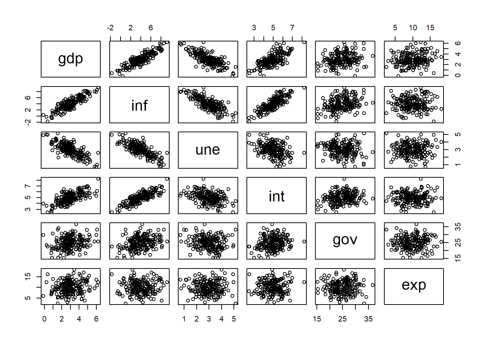
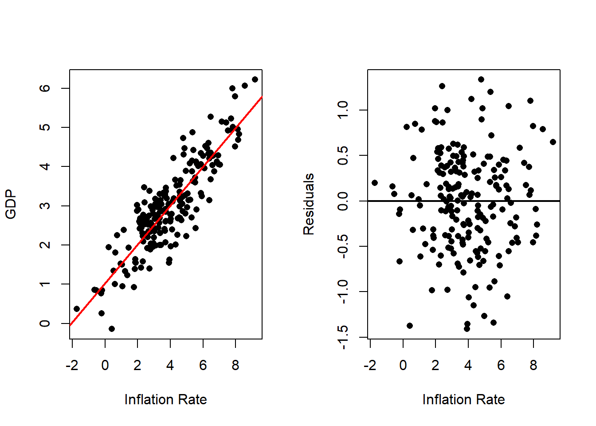
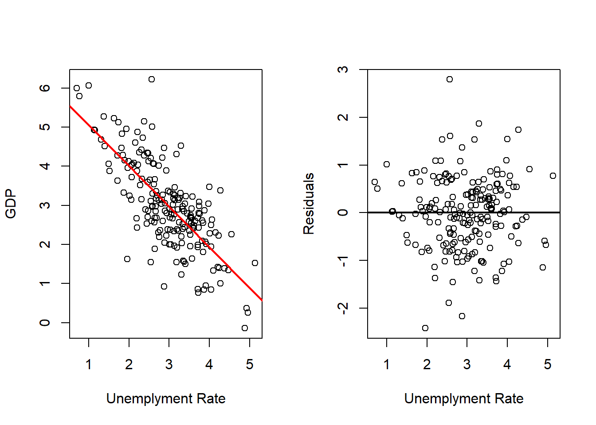
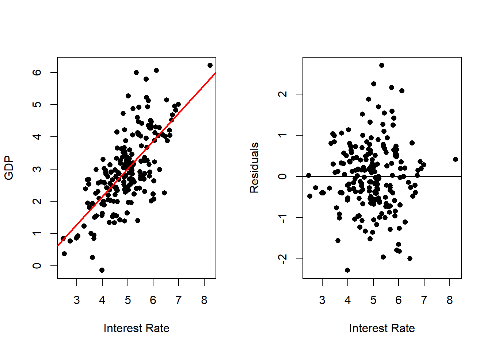
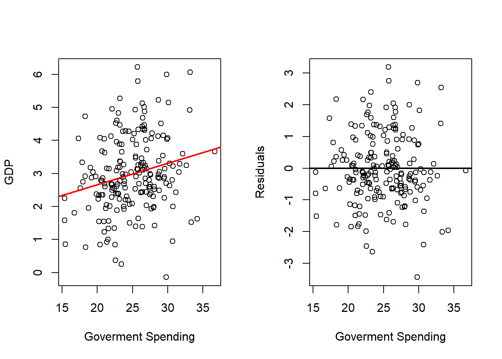
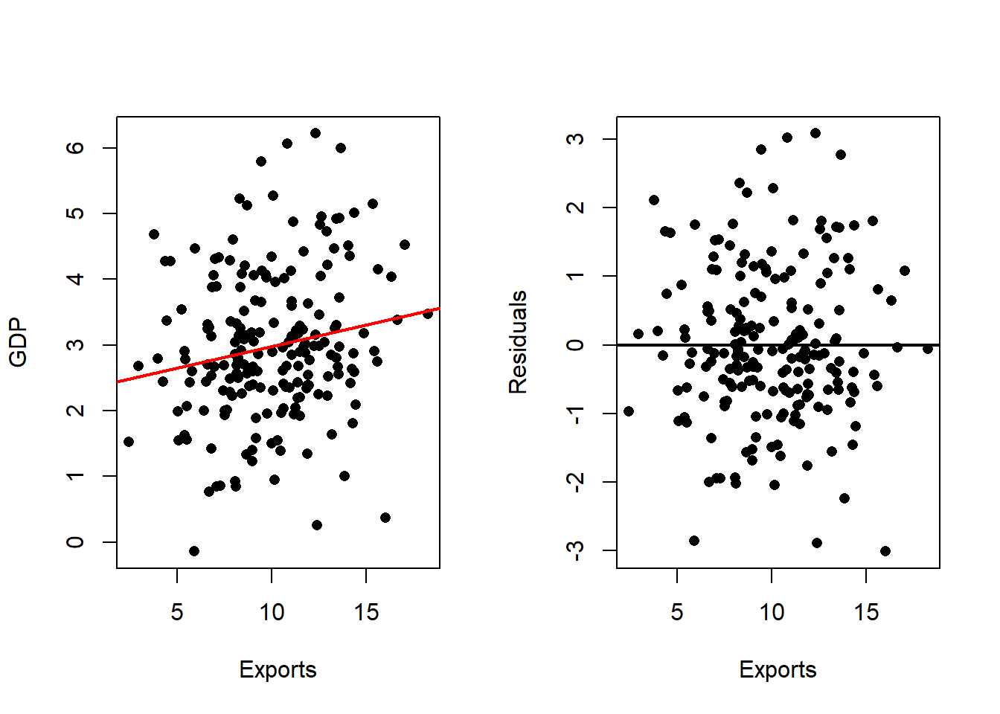
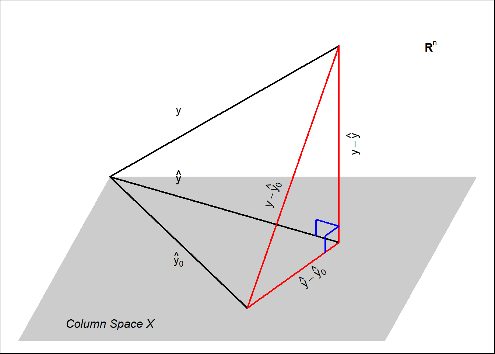

6 Multiple Linear Regression
6.1 Introduction
Multiple linear regression extends the simple linear regression framework by allowing the response variable to depend on several explanatory variables simultaneously. This provides a flexible framework for describing more complex relationships and for constructing predictions using several sources of information.
In many applications, variation in a response cannot be adequately represented using a single explanatory variable. Economic growth, for example, may be related to investment, inflation, interest rates, and exports; academic performance may be related to study habits, socioeconomic characteristics, and prior preparation. Multiple linear regression provides a systematic way to represent these relationships within the same least-squares framework developed previously.
Importantly, the fundamental optimization problem does not change. Simple linear regression, polynomial regression, and multiple linear regression all use the same mathematical machinery. The main difference is the structure of the design matrix.
6.1.1 The General Model
For observation \(i\), the multiple linear regression model is
\[ y_i = \beta_0 + \beta_1x_{1,i} + \beta_2x_{2,i} + \cdots + \beta_px_{p,i} + e_i, \qquad i=1,\ldots,n, \]
where:
- \(y_i\) is the \(i\)th observation of the response variable,
- \(\beta_0\) is the intercept,
- \(\beta_1,\ldots,\beta_p\) are the coefficients associated with the explanatory variables,
- \(x_{1,i},\ldots,x_{p,i}\) are the values of the explanatory variables for observation \(i\), and
- \(e_i\) is the discrepancy between the observed response and the linear component of the model.
At this stage, no probabilistic assumptions are imposed on the errors. The model is treated as a deterministic representation of the observed response using a linear combination of the explanatory variables.
To establish notation that will be used throughout the chapter, define the matrix containing only the explanatory variables as
\[ \mathbf{X}_* = \begin{bmatrix} \mathbf{x}_1 & \cdots & \mathbf{x}_p \end{bmatrix} \in\mathbb{R}^{n\times p}, \]
where
\[ \mathbf{x}_j = \begin{bmatrix} x_{j,1}\\ \vdots\\ x_{j,n} \end{bmatrix} \in\mathbb{R}^n, \qquad j=1,\ldots,p. \]
The complete design matrix, including the column associated with the intercept, is
\[ \mathbf{X} = \begin{bmatrix} \mathbf{1} & \mathbf{X}_* \end{bmatrix} \in\mathbb{R}^{n\times(p+1)}. \]
Similarly, define
\[ \mathbf{y} = \begin{bmatrix} y_1\\ \vdots\\ y_n \end{bmatrix}, \qquad \boldsymbol{\beta} = \begin{bmatrix} \beta_0\\ \beta_1\\ \vdots\\ \beta_p \end{bmatrix}, \qquad \mathbf{e} = \begin{bmatrix} e_1\\ \vdots\\ e_n \end{bmatrix}. \]
Then the model can be written compactly as
\[ \mathbf{y} = \mathbf{X}\boldsymbol{\beta} + \mathbf{e}. \]
This is exactly the same matrix representation introduced previously for simple linear regression. The difference is that \(\mathbf{X}\) now contains several explanatory-variable columns rather than only one.
6.1.2 Interpretation and Objectives
Multiple linear regression has two important objectives in the present part of the course.
Description — to describe how the response varies with several explanatory variables considered simultaneously.
Prediction — to use several explanatory variables jointly to construct predictions of the response.
The coefficient \(\beta_j\) describes how the linear component of the model changes with \(x_j\) when the other explanatory variables are held fixed. In particular,
\[ \beta_0+\beta_1x_1+\cdots+\beta_jx_j+\cdots+\beta_px_p \]
changes by \(\beta_j\) when \(x_j\) increases by one unit while the remaining explanatory variables remain unchanged.
This is often called a partial or conditional interpretation of the coefficient.
However, this interpretation is algebraic rather than automatically causal. Holding the remaining explanatory variables fixed allows us to isolate the contribution of one variable within the fitted linear model, but additional assumptions would be required to interpret that change as the causal effect of modifying the explanatory variable.
Thus, multiple regression allows us to separate the roles played by different columns of the design matrix without requiring a causal interpretation.
6.1.3 Applications and Context
Multiple linear regression is useful whenever several quantities may help describe or predict a response.
For example, economic performance may be represented using explanatory variables such as inflation, unemployment, interest rates, government expenditure, and exports. Rather than fitting a separate regression for each explanatory variable, multiple regression allows all of them to enter the same linear model.
This generalization introduces several mathematical and computational issues that do not arise as clearly in simple regression.
One important issue is dependence among the explanatory variables. If two or more columns of \(\mathbf{X}_*\) contain very similar information, it may become difficult to distinguish their individual contributions to the fitted model. In extreme cases, exact linear relationships among the columns can cause \(\mathbf{X}\) to lose full column rank, so the usual least-squares solution is no longer unique.
Even when the columns are not exactly linearly dependent, strong relationships among them can affect the numerical stability and interpretation of the estimated coefficients. These issues will be studied through the linear algebra of the design matrix.
At this stage, our focus remains on the least-squares optimization problem: how the design matrix determines the fitted values, residuals, and coefficient estimates. Statistical inference and the probabilistic interpretation of these quantities will be introduced later.
6.1.4 Connection to Polynomial Regression
We have already encountered a special case of multiple linear regression in polynomial regression.
For example, the quadratic model
\[ y_i = \beta_0 + \beta_1x_i + \beta_2x_i^2 + e_i \]
can be written using the design matrix
\[ \mathbf{X} = \begin{bmatrix} 1 & x_1 & x_1^2\\ 1 & x_2 & x_2^2\\ \vdots & \vdots & \vdots\\ 1 & x_n & x_n^2 \end{bmatrix}. \]
From the perspective of least squares, the columns containing \(x\) and \(x^2\) are treated in exactly the same way as two different explanatory-variable columns.
Polynomial regression therefore introduced the essential algebraic structure of multiple regression:
\[ \mathbf{y} = \mathbf{X}\boldsymbol{\beta} + \mathbf{e}. \]
The difference is conceptual. In polynomial regression, the columns of \(\mathbf{X}_*\) are transformations of a single original explanatory variable,
\[ x,\;x^2,\;\ldots,\;x^k, \]
whereas in general multiple linear regression the columns
\[ \mathbf{x}_1,\ldots,\mathbf{x}_p \]
may represent distinct explanatory variables.
Thus, multiple linear regression is the natural generalization of the framework already developed for polynomial regression. The least-squares machinery remains the same; what changes is the number and interpretation of the columns in the design matrix.
6.2 Example: Modeling GDP
As an applied example, consider the problem of describing and predicting a country’s Gross Domestic Product (GDP) using several economic indicators. We use the following explanatory variables:
- Inflation rate,
- Unemployment rate,
- Reference interest rate,
- Government spending as a percentage of GDP, and
- Exports as a percentage of GDP.
Unlike simple linear regression, where the relationship between the response and explanatory variable can be displayed in a single scatterplot, multiple regression involves several explanatory variables simultaneously. We therefore begin by examining the variables pairwise.
The following code reads the data and produces a scatterplot matrix containing a scatterplot for every pair of variables.
# Reads Data
dat <- read.csv(file = "Gdp Data.csv")
# Plot the scatterplots for each pair of variables
pairs(dat)
The scatterplot matrix provides an initial visual description of the dataset. In particular, it allows us to examine two types of relationships:
- the pairwise relationship between GDP and each explanatory variable, and
- the relationships among the explanatory variables themselves.
The second point becomes especially important in multiple regression. If two explanatory variables are strongly related to each other, then they may contain overlapping information about GDP. Consequently, their coefficients in a multiple regression may behave differently from the coefficients obtained when each variable is considered separately.
The same pairwise relationships can be summarized numerically using correlations.
## gdp inf une int gov exp
## gdp 1.0000000 0.875131082 -0.74874795 0.6964256 0.22172279 0.173602651
## inf 0.8751311 1.000000000 -0.78173033 0.8292061 0.31103644 0.005685918
## une -0.7487479 -0.781730327 1.00000000 -0.3642453 -0.16674407 0.010553855
## int 0.6964256 0.829206121 -0.36424525 1.0000000 0.21389456 0.015699798
## gov 0.2217228 0.311036436 -0.16674407 0.2138946 1.00000000 0.018475446
## exp 0.1736027 0.005685918 0.01055386 0.0156998 0.01847545 1.000000000The correlation matrix complements the scatterplot matrix by quantifying the strength and direction of the linear relationships between pairs of variables. Large positive or negative correlations between GDP and an explanatory variable suggest a strong pairwise linear relationship. Large correlations among explanatory variables indicate that some columns of the design matrix may contain similar information.
At this point, these quantities are used only as descriptive tools. The multiple-regression fit will determine how the explanatory variables behave when they are included in the model simultaneously.
6.2.1 Simple Regressions
Before fitting the full multiple regression model, it is useful to fit a separate simple linear regression of GDP on each explanatory variable.
These models answer a different question from the multiple regression. A simple regression describes the relationship between GDP and one explanatory variable without accounting for the remaining variables.
For each explanatory variable, the code displays two plots:
- the scatterplot of GDP against the explanatory variable together with its fitted regression line, and
- the residuals from that simple regression.
The first plot helps us visualize the pairwise relationship. The second shows what remains unexplained after fitting that particular straight line.
6.2.1.1 Inflation Rate
# Fits with Inflation
outRegInf <- lm(gdp ~ inf, data = dat)
varVal <- dat$inf
out <- outRegInf
varNam <- "Inflation Rate"
# Plots Regression Line and Scatterplot and residuals plot
par(mfrow = c(1, 2))
plot(x = varVal,
y = dat$gdp,
xlab = varNam,
ylab = "GDP",
pch = 16)
abline(a = out$coefficients[1],
b = out$coefficients[2],
col = 'red',
lwd = 2)
plot(x = varVal,
y = out$residuals,
xlab = varNam,
ylab = "Residuals",
pch = 16)
abline(h = 0,
lwd = 2)
The fitted slope describes the pairwise linear relationship between inflation and GDP. It answers how the fitted value of GDP changes with inflation when inflation is the only explanatory variable included in the model.
The residual plot shows the differences between the observed GDP values and those predicted using inflation alone. Any remaining structure in the residuals indicates variation in GDP that this simple regression does not represent.
6.2.1.2 Unemployment Rate
# Fits with Unemployment
outRegUne <- lm(gdp ~ une, data = dat)
varVal <- dat$une
out <- outRegUne
varNam <- "Unemployment Rate"
# Plots Regression Line and Scatterplot and residuals plot
par(mfrow = c(1, 2))
plot(x = varVal,
y = dat$gdp,
xlab = varNam,
ylab = "GDP",
pch = 16)
abline(a = out$coefficients[1],
b = out$coefficients[2],
col = 'red',
lwd = 2)
plot(x = varVal,
y = out$residuals,
xlab = varNam,
ylab = "Residuals",
pch = 16)
abline(h = 0,
lwd = 2)
This regression describes the relationship between unemployment and GDP when unemployment is considered by itself.
As before, the fitted line summarizes the pairwise linear trend, while the residuals represent the component of GDP that is not captured by that one-variable linear fit.
6.2.1.3 Interest Rate
# Fits with Interest Rate
outRegInt <- lm(gdp ~ int, data = dat)
varVal <- dat$int
out <- outRegInt
varNam <- "Interest Rate"
# Plots Regression Line and Scatterplot and residuals plot
par(mfrow = c(1, 2))
plot(x = varVal,
y = dat$gdp,
xlab = varNam,
ylab = "GDP",
pch = 16)
abline(a = out$coefficients[1],
b = out$coefficients[2],
col = 'red',
lwd = 2)
plot(x = varVal,
y = out$residuals,
xlab = varNam,
ylab = "Residuals",
pch = 16)
abline(h = 0,
lwd = 2)
The estimated slope now describes the pairwise relationship between the reference interest rate and GDP.
Importantly, this coefficient reflects both the relationship of the interest rate with GDP and any information that the interest rate shares with the other economic variables that have not yet been included in the model.
6.2.1.4 Government Spending
# Fits with Government Spending
outRegGov <- lm(gdp ~ gov, data = dat)
varVal <- dat$gov
out <- outRegGov
varNam <- "Government Spending"
# Plots Regression Line and Scatterplot and residuals plot
par(mfrow = c(1, 2))
plot(x = varVal,
y = dat$gdp,
xlab = varNam,
ylab = "GDP",
pch = 16)
abline(a = out$coefficients[1],
b = out$coefficients[2],
col = 'red',
lwd = 2)
plot(x = varVal,
y = out$residuals,
xlab = varNam,
ylab = "Residuals",
pch = 16)
abline(h = 0,
lwd = 2)
This fit examines GDP using government spending as the only explanatory variable.
As with the previous models, the estimated coefficient should be interpreted as a simple-regression coefficient. It does not yet describe the relationship between government spending and GDP after accounting for inflation, unemployment, interest rates, or exports.
6.2.1.5 Exports
# Fits with Exports
outRegExp <- lm(gdp ~ exp, data = dat)
varVal <- dat$exp
out <- outRegExp
varNam <- "Exports"
# Plots Regression Line and Scatterplot and residuals plot
par(mfrow = c(1, 2))
plot(x = varVal,
y = dat$gdp,
xlab = varNam,
ylab = "GDP",
pch = 16)
abline(a = out$coefficients[1],
b = out$coefficients[2],
col = 'red',
lwd = 2)
plot(x = varVal,
y = out$residuals,
xlab = varNam,
ylab = "Residuals",
pch = 16)
abline(h = 0,
lwd = 2)
The exports model provides the final pairwise regression. Its slope summarizes how the fitted GDP changes with exports when exports are considered alone.
Taken together, the five simple regressions provide useful benchmarks. They show what each explanatory variable appears to contribute when examined individually. We can now compare these results with a model in which all five explanatory variables are included simultaneously.
6.2.2 Multiple Regression
The simple regressions answer questions of the form
\[ \text{How is GDP related to } x_j \text{ when } x_j \text{ is used by itself?} \]
Multiple regression answers a different question. It fits GDP using all explanatory variables simultaneously:
\[ \text{GDP} = \beta_0 + \beta_1\text{Inflation} + \beta_2\text{Unemployment} + \beta_3\text{Interest} + \beta_4\text{Government Spending} + \beta_5\text{Exports} + e. \]
Each coefficient now describes the change in the fitted linear component associated with one explanatory variable while the values of the other explanatory variables are held fixed.
We fit the full model and compare its coefficient estimates with those obtained from the corresponding simple regressions.
outRegAll <- lm(gdp ~ inf + une + int + gov + exp, data = dat)
# Summary All
print("All Independent Variables")## [1] "All Independent Variables"##
## Call:
## lm(formula = gdp ~ inf + une + int + gov + exp, data = dat)
##
## Residuals:
## Min 1Q Median 3Q Max
## -1.56610 -0.38300 -0.00634 0.36630 1.22542
##
## Coefficients:
## Estimate Std. Error t value Pr(>|t|)
## (Intercept) 1.555301 0.380440 4.088 6.41e-05 ***
## inf 0.312218 0.090012 3.469 0.000647 ***
## une -0.377334 0.129275 -2.919 0.003938 **
## int 0.177827 0.128312 1.386 0.167403
## gov -0.008483 0.010361 -0.819 0.413950
## exp 0.064657 0.011930 5.420 1.80e-07 ***
## ---
## Signif. codes: 0 '***' 0.001 '**' 0.01 '*' 0.05 '.' 0.1 ' ' 1
##
## Residual standard error: 0.5024 on 190 degrees of freedom
## Multiple R-squared: 0.8096, Adjusted R-squared: 0.8046
## F-statistic: 161.6 on 5 and 190 DF, p-value: < 2.2e-16## [1] "Only Inflation Rate"##
## Call:
## lm(formula = gdp ~ inf, data = dat)
##
## Residuals:
## Min 1Q Median 3Q Max
## -1.40960 -0.38896 0.03562 0.37998 1.33364
##
## Coefficients:
## Estimate Std. Error t value Pr(>|t|)
## (Intercept) 1.02551 0.08705 11.78 <2e-16 ***
## inf 0.49489 0.01965 25.19 <2e-16 ***
## ---
## Signif. codes: 0 '***' 0.001 '**' 0.01 '*' 0.05 '.' 0.1 ' ' 1
##
## Residual standard error: 0.5514 on 194 degrees of freedom
## Multiple R-squared: 0.7659, Adjusted R-squared: 0.7646
## F-statistic: 634.5 on 1 and 194 DF, p-value: < 2.2e-16## [1] "Only Unemployment Rate"##
## Call:
## lm(formula = gdp ~ une, data = dat)
##
## Residuals:
## Min 1Q Median 3Q Max
## -2.42276 -0.49693 0.02667 0.49525 2.79562
##
## Coefficients:
## Estimate Std. Error t value Pr(>|t|)
## (Intercept) 6.0868 0.2046 29.74 <2e-16 ***
## une -1.0400 0.0661 -15.73 <2e-16 ***
## ---
## Signif. codes: 0 '***' 0.001 '**' 0.01 '*' 0.05 '.' 0.1 ' ' 1
##
## Residual standard error: 0.7554 on 194 degrees of freedom
## Multiple R-squared: 0.5606, Adjusted R-squared: 0.5584
## F-statistic: 247.5 on 1 and 194 DF, p-value: < 2.2e-16## [1] "Only Interest Rate"##
## Call:
## lm(formula = gdp ~ int, data = dat)
##
## Residuals:
## Min 1Q Median 3Q Max
## -2.27807 -0.50801 -0.00257 0.50336 2.69719
##
## Coefficients:
## Estimate Std. Error t value Pr(>|t|)
## (Intercept) -1.31600 0.32323 -4.071 6.8e-05 ***
## int 0.86483 0.06398 13.517 < 2e-16 ***
## ---
## Signif. codes: 0 '***' 0.001 '**' 0.01 '*' 0.05 '.' 0.1 ' ' 1
##
## Residual standard error: 0.8178 on 194 degrees of freedom
## Multiple R-squared: 0.485, Adjusted R-squared: 0.4824
## F-statistic: 182.7 on 1 and 194 DF, p-value: < 2.2e-16## [1] "Only Government Spending"##
## Call:
## lm(formula = gdp ~ gov, data = dat)
##
## Residuals:
## Min 1Q Median 3Q Max
## -3.4370 -0.6442 -0.1258 0.7429 3.1839
##
## Coefficients:
## Estimate Std. Error t value Pr(>|t|)
## (Intercept) 1.37117 0.51450 2.665 0.00835 **
## gov 0.06464 0.02041 3.167 0.00179 **
## ---
## Signif. codes: 0 '***' 0.001 '**' 0.01 '*' 0.05 '.' 0.1 ' ' 1
##
## Residual standard error: 1.111 on 194 degrees of freedom
## Multiple R-squared: 0.04916, Adjusted R-squared: 0.04426
## F-statistic: 10.03 on 1 and 194 DF, p-value: 0.001789## [1] "Only Exports"##
## Call:
## lm(formula = gdp ~ exp, data = dat)
##
## Residuals:
## Min 1Q Median 3Q Max
## -3.0084 -0.6679 -0.1133 0.6581 3.0810
##
## Coefficients:
## Estimate Std. Error t value Pr(>|t|)
## (Intercept) 2.32709 0.27818 8.365 1.16e-14 ***
## exp 0.06540 0.02664 2.455 0.015 *
## ---
## Signif. codes: 0 '***' 0.001 '**' 0.01 '*' 0.05 '.' 0.1 ' ' 1
##
## Residual standard error: 1.122 on 194 degrees of freedom
## Multiple R-squared: 0.03014, Adjusted R-squared: 0.02514
## F-statistic: 6.028 on 1 and 194 DF, p-value: 0.01496# Formats and Show Info Table
tab <- cbind(outRegAll$coefficients[-1], c(outRegInf$coefficients[2],
outRegUne$coefficients[2],
outRegInt$coefficients[2],
outRegGov$coefficients[2],
outRegExp$coefficients[2]))
colnames(tab) <- c("All", "Individual")
rownames(tab) <- c("Inflation", "Unemployment", "Interest Rate", "Government Expenditure", "Exports")
knitr::kable(tab)| All | Individual | |
|---|---|---|
| Inflation | 0.3122181 | 0.4948931 |
| Unemployment | -0.3773340 | -1.0400201 |
| Interest Rate | 0.1778271 | 0.8648348 |
| Government Expenditure | -0.0084833 | 0.0646403 |
| Exports | 0.0646569 | 0.0654039 |
The final table places the multiple-regression coefficients next to the corresponding simple-regression coefficients. These coefficients need not be equal because they describe different fitted relationships.
For example, the simple-regression coefficient for inflation is obtained from a model containing only inflation,
\[ \text{GDP} = \beta_0+\beta_1\text{Inflation}+e, \]
whereas the inflation coefficient in the multiple regression is obtained from a model in which unemployment, interest rates, government spending, and exports are also included.
Therefore, a change in the coefficient after additional explanatory variables are included is not itself surprising. It indicates that the explanatory variables contain overlapping information about the response.
A coefficient may become smaller, larger, or even change sign after the other explanatory variables are included. Such behavior motivates an important question that will be developed mathematically in this chapter:
How does the relationship among the columns of the design matrix affect the estimated regression coefficients?
This is one of the central differences between simple and multiple regression. In simple regression, there is only one nonconstant explanatory-variable column. In multiple regression, the geometry of the entire collection
\[ \mathbf{x}_1,\ldots,\mathbf{x}_p \]
matters.
The comparison therefore provides a first illustration of why multiple regression cannot be understood simply as several simple regressions performed at the same time. The coefficients are estimated jointly, and their values depend on the relationships among all columns of the design matrix.
6.2.3 Summary
This introduction highlights the main ideas that distinguish multiple linear regression from simple linear regression:
Explore the variables jointly. Scatterplot matrices and correlations help identify pairwise relationships between the response and explanatory variables, as well as relationships among the explanatory variables themselves.
Use simple regressions as benchmarks. Fitting GDP separately on each explanatory variable shows how each variable behaves when considered alone.
Fit all explanatory variables simultaneously. Multiple regression estimates the coefficients jointly, so each coefficient describes the role of one explanatory variable while the others are held fixed within the linear model.
Compare simple and multiple regression coefficients. The coefficients can change substantially because the explanatory variables may contain overlapping information. Their values therefore depend on the relationships among all columns of the design matrix.
The central lesson is that multiple regression is not simply a collection of simple regressions. It is a single least-squares problem involving several explanatory variables at once.
This makes the structure of the design matrix particularly important. In the following sections, we study how the geometry and algebra of \(\mathbf{X}\) determine the coefficient estimates, fitted values, residuals, and behavior of the multiple linear regression model.
6.3 Least Squares Estimation
For least squares estimation, we solve the optimization problem
\[ Q(\boldsymbol{\beta}) = \sum_{i=1}^n \left( y_i-\beta_0-\sum_{j=1}^p\beta_jx_{j,i} \right)^2 = (\mathbf{y}-\mathbf{X}\boldsymbol{\beta})'(\mathbf{y}-\mathbf{X}\boldsymbol{\beta}). \]
The least-squares estimator is therefore defined as
\[ \hat{\boldsymbol{\beta}} = \underset{\boldsymbol{\beta}}{\operatorname{argmin}} \;Q(\boldsymbol{\beta}). \]
Because the problem has exactly the same matrix form as in simple linear regression, the solution is obtained in the same way.
Suppose that the full design matrix \(\mathbf{X}\) has full column rank,
\[ \operatorname{rank}(\mathbf{X})=p+1. \]
Then \(\mathbf{X}'\mathbf{X}\) is invertible, and the unique least-squares solution is
\[ \hat{\boldsymbol{\beta}} = (\mathbf{X}'\mathbf{X})^{-1}\mathbf{X}'\mathbf{y}. \]
The formula is therefore unchanged from the matrix formulation of simple linear regression. The difference is only the dimension of the coefficient vector. In multiple linear regression,
\[ \boldsymbol{\beta} = \left( \beta_0, \beta_1, \beta_2, \ldots, \beta_p \right)', \]
and consequently,
\[ \hat{\boldsymbol{\beta}} = \left( \hat{\beta}_0, \hat{\beta}_1, \hat{\beta}_2, \ldots, \hat{\beta}_p \right)'. \]
Thus,
\[ \boxed{ \text{same least-squares optimization} \quad\Longrightarrow\quad \text{same matrix solution} } \]
with more explanatory variables. This is why working in matrix form is particularly useful.
6.4 Properties of the Estimates
As with simple linear regression, we distinguish between the fitted values and the residuals.
Given the least-squares estimator
\[ \hat{\boldsymbol{\beta}} = (\mathbf{X}'\mathbf{X})^{-1}\mathbf{X}'\mathbf{y}, \]
the fitted values are
\[ \hat{\mathbf{y}} = \mathbf{X}\hat{\boldsymbol{\beta}}, \]
and the residuals are
\[ \hat{\mathbf{e}} = \mathbf{y}-\hat{\mathbf{y}} = \mathbf{y}-\mathbf{X}\hat{\boldsymbol{\beta}}. \]
We can also express the fitted values as
\[ \hat{\mathbf{y}} = \mathbf{X}(\mathbf{X}'\mathbf{X})^{-1}\mathbf{X}'\mathbf{y} = \mathbf{H}\mathbf{y}, \]
where
\[ \mathbf{H} = \mathbf{X}(\mathbf{X}'\mathbf{X})^{-1}\mathbf{X}' \]
is called the hat matrix, because it transforms \(\mathbf{y}\) into \(\hat{\mathbf{y}}\). It is also called the projection matrix, since it projects \(\mathbf{y}\) onto the column space of \(\mathbf{X}\).
The properties of the least-squares solution follow primarily from one important consequence of the normal equations:
\[ \boxed{ \hat{\boldsymbol{\beta}} = (\mathbf{X}'\mathbf{X})^{-1}\mathbf{X}'\mathbf{y} \quad\Longrightarrow\quad \mathbf{X}'\hat{\mathbf{e}}=\mathbf{0}. } \]
When the design matrix includes an intercept, this identity implies that the residuals sum to zero, are orthogonal to every explanatory-variable vector and to the fitted values, and that the mean of the fitted values equals the mean of the observed responses.
Proposition 6.1 (Properties of the Least-Squares Estimates) Suppose that the design matrix \(\mathbf{X}\) has full column rank and includes a column of ones for the intercept. Then the least-squares solution satisfies the following properties:
Each component of \(\hat{\boldsymbol{\beta}}\) is a linear combination of the entries of \(\mathbf{y}\).
The sum of the residuals is equal to zero,
\[ \sum_{i=1}^n\hat e_i=0. \]
The residual vector is orthogonal to every explanatory-variable vector,
\[ \hat{\mathbf{e}}\perp\mathbf{x}_j, \qquad j=1,\ldots,p. \]
The residual vector is orthogonal to the fitted-value vector,
\[ \hat{\mathbf{e}}\perp\hat{\mathbf{y}}. \]
The mean of the fitted values equals the mean of the observed responses,
\[ \bar y=\overline{\hat y}, \]
where
\[ \overline{\hat y} = \frac{1}{n}\sum_{i=1}^n\hat y_i. \]
Proof
Proof. 1. Linearity of the coefficient estimates
To show that each component of \(\hat{\boldsymbol{\beta}}\) is a linear combination of the entries of \(\mathbf{y}\), we need to express the estimator as
\[ \hat{\boldsymbol{\beta}}=\mathbf{A}\mathbf{y} \]
for some matrix \(\mathbf{A}\) that does not depend on \(\mathbf{y}\).
Let
\[ \mathbf{A} = (\mathbf{X}'\mathbf{X})^{-1}\mathbf{X}'. \]
Then,
\[ \hat{\boldsymbol{\beta}} = (\mathbf{X}'\mathbf{X})^{-1}\mathbf{X}'\mathbf{y} = \mathbf{A}\mathbf{y}. \]
When the design matrix \(\mathbf{X}\) is held fixed, \(\mathbf{A}\) is also fixed. Therefore, each component of \(\hat{\boldsymbol{\beta}}\) is a linear combination of the entries of \(\mathbf{y}\).
2. The normal equations and the sum of the residuals
The remaining properties follow from the normal equations.
Starting with the least-squares solution,
\[\begin{align*} \hat{\boldsymbol{\beta}} &= (\mathbf{X}'\mathbf{X})^{-1}\mathbf{X}'\mathbf{y} & \text{least-squares solution} \\ \mathbf{X}'\mathbf{X}\hat{\boldsymbol{\beta}} &= \mathbf{X}'\mathbf{y} & \text{multiply by } \mathbf{X}'\mathbf{X}\\ \mathbf{X}'\mathbf{y}-\mathbf{X}'\mathbf{X}\hat{\boldsymbol{\beta}} &= \mathbf{0} & \text{rearrange} \\ \mathbf{X}'(\mathbf{y}-\mathbf{X}\hat{\boldsymbol{\beta}}) &= \mathbf{0} & \text{factor } \mathbf{X}' \\ \mathbf{X}'\hat{\mathbf{e}} &= \mathbf{0} & \text{def. residuals}. \end{align*}\]
This is the central identity from which the remaining properties follow.
Recall that the design matrix includes the column of ones,
\[ \mathbf{X} = \begin{bmatrix} \mathbf{1}& \mathbf{x}_1 & \cdots & \mathbf{x}_p \end{bmatrix}. \]
Consequently,
\[ \mathbf{X}' = \begin{bmatrix} \mathbf{1}'\\ \mathbf{x}_1'\\ \vdots\\ \mathbf{x}_p' \end{bmatrix}. \]
Expanding the product \(\mathbf{X}'\hat{\mathbf{e}}\), we obtain
\[ \mathbf{X}'\hat{\mathbf{e}} = \begin{bmatrix} \mathbf{1}'\hat{\mathbf{e}}\\ \mathbf{x}_1'\hat{\mathbf{e}}\\ \vdots\\ \mathbf{x}_p'\hat{\mathbf{e}} \end{bmatrix} = \begin{bmatrix} 0\\ 0\\ \vdots\\ 0 \end{bmatrix}. \]
The first component of this equality gives
\[ \mathbf{1}'\hat{\mathbf{e}}=0. \]
Since \(\mathbf{1}\) is the vector of ones,
\[ \mathbf{1}'\hat{\mathbf{e}} = \sum_{i=1}^n\hat e_i. \]
Therefore,
\[ \boxed{ \sum_{i=1}^n\hat e_i=0. } \]
This establishes the second property.
3. Orthogonality of the residuals to the explanatory variables
Using the same expansion of the normal equations,
\[ \mathbf{X}'\hat{\mathbf{e}} = \begin{bmatrix} \mathbf{1}'\hat{\mathbf{e}}\\ \mathbf{x}_1'\hat{\mathbf{e}}\\ \vdots\\ \mathbf{x}_p'\hat{\mathbf{e}} \end{bmatrix} = \mathbf{0}, \]
we see that its remaining components give
\[ \mathbf{x}_j'\hat{\mathbf{e}}=0, \qquad j=1,\ldots,p. \]
Recall that two vectors are orthogonal when their inner product is zero. Therefore,
\[ \boxed{ \hat{\mathbf{e}}\perp\mathbf{x}_j, \qquad j=1,\ldots,p. } \]
This establishes the third property.
4. Orthogonality of the residuals to the fitted values
To show that the residuals are orthogonal to the fitted values, we need to establish that
\[ \hat{\mathbf{e}}'\hat{\mathbf{y}}=0. \]
Recall that
\[ \hat{\mathbf{y}} = \mathbf{X}\hat{\boldsymbol{\beta}}. \]
Therefore,
\[\begin{align*} \hat{\mathbf{e}}'\hat{\mathbf{y}} &= \hat{\mathbf{e}}'\mathbf{X}\hat{\boldsymbol{\beta}} & \text{def. fitted values} \\ &= (\mathbf{X}'\hat{\mathbf{e}})'\hat{\boldsymbol{\beta}} & \text{transpose rule} \\ &= \mathbf{0}'\hat{\boldsymbol{\beta}} & \text{normal equations} \\ &= 0. \end{align*}\]
Consequently,
\[ \boxed{ \hat{\mathbf{e}}\perp\hat{\mathbf{y}}. } \]
This establishes the fourth property.
Notice that the fitted values are linear combinations of the columns of \(\mathbf{X}\). Since the residuals are orthogonal to every column of \(\mathbf{X}\), they must also be orthogonal to the fitted-value vector.
5. Equality of the means
Finally, we show that
\[ \bar y=\overline{\hat y}. \]
Recall from the second property that
\[ \mathbf{1}'\hat{\mathbf{e}}=0. \]
Using the definition of the residuals,
\[\begin{align*} \mathbf{1}'\hat{\mathbf{e}} &= \mathbf{1}'(\mathbf{y}-\hat{\mathbf{y}}) & \text{def. residuals} \\ &= \mathbf{1}'\mathbf{y}-\mathbf{1}'\hat{\mathbf{y}} & \text{distributivity} \\ &= \sum_{i=1}^n y_i-\sum_{i=1}^n\hat y_i & \text{def. } \mathbf{1}\\ &= n\bar y-n\overline{\hat y} & \text{def. means}. \end{align*}\]
Since \(\mathbf{1}'\hat{\mathbf{e}}=0\), we obtain
\[\begin{align*} n\bar y-n\overline{\hat y} &=0\\ n\bar y &=n\overline{\hat y}\\ \bar y &=\overline{\hat y}. \end{align*}\]
Therefore,
\[ \boxed{ \bar y=\overline{\hat y}. } \]
This establishes the fifth property.
Notice that the second and fifth properties depend on the presence of the intercept in the model. Including the intercept ensures that \(\mathbf{1}\) is a column of \(\mathbf{X}\), and therefore the normal equations imply
\[ \mathbf{1}'\hat{\mathbf{e}}=0. \]
Without an intercept, the residuals are still orthogonal to the columns of \(\mathbf{X}\), but they are not necessarily orthogonal to \(\mathbf{1}\). Consequently, their sum need not equal zero, and the mean of the fitted values need not equal the mean of the observed responses.
The main result of this subsection is therefore the hierarchy
\[ \boxed{ \hat{\boldsymbol{\beta}} = (\mathbf{X}'\mathbf{X})^{-1}\mathbf{X}'\mathbf{y} \quad\Longrightarrow\quad \mathbf{X}'\hat{\mathbf{e}}=\mathbf{0}. } \]
Since the design matrix includes the intercept and all explanatory-variable vectors, the normal equations imply
\[ \boxed{ \mathbf{X}'\hat{\mathbf{e}}=\mathbf{0} \quad\Longrightarrow\quad \begin{cases} \displaystyle\sum_{i=1}^n\hat e_i=0,\\[6pt] \hat{\mathbf{e}}\perp\mathbf{x}_j,\quad j=1,\ldots,p,\\[4pt] \hat{\mathbf{e}}\perp\hat{\mathbf{y}},\\[4pt] \bar y=\overline{\hat y}. \end{cases} } \]
Thus, the properties of the residuals and fitted values are direct consequences of a single matrix identity.
6.5 Multiple \(R^2\)
As with simple linear regression we can explain the total variability, by decomposing the variability in two parts, the regression variability and the error variability.
First, we define this concepts:
Total Sum of Squares \(SS_{tot}\):
The total sum of squares measures the total variability in \(\mathbf{y}\):\[ SS_{tot} = (\mathbf{y} - \bar{y} \mathbf{1})' (\mathbf{y} - \bar{y} \mathbf{1}) \]
Residual Sum of Squares \(SS_{res}\):
The residual sum of squares measures the unexplained variability in the regression model:\[ SS_{res} = (\mathbf{y} - \hat{\mathbf{y}})' (\mathbf{y} - \hat{\mathbf{y}}) \]
Explained Sum of Squares \(SS_{reg}\)
The explained sum of squares measures how much of the total variability is explained by the regression model. It is the difference between the predicted values and the mean of \(\mathbf{y}\):
\[ SS_{reg} = (\hat{\mathbf{y}} - \bar{y} \mathbf{1})' (\hat{\mathbf{y}} - \bar{y} \mathbf{1}) \] As with simple linear regression, it can be shown that:
\[ SS_{tot} = SS_{reg} + SS_{res} \] To see this, we start form \(SS_{tot}\), and do the adding and subtracting trick:
\[\begin{align*} SS_{tot} &= (\mathbf{y} - \bar{y} \mathbf{1})' (\mathbf{y} - \bar{y} \mathbf{1}) \\ &= (\mathbf{y} - \hat{\mathbf{y}} + \hat{\mathbf{y}} - \bar{y} \mathbf{1})' (\mathbf{y} - \hat{\mathbf{y}} + \hat{\mathbf{y}} - \bar{y} \mathbf{1}) \\ &= (\mathbf{y} - \hat{\mathbf{y}})' (\mathbf{y} - \hat{\mathbf{y}}) + (\mathbf{y} - \hat{\mathbf{y}})' (\hat{\mathbf{y}} - \bar{y} \mathbf{1}) + (\hat{\mathbf{y}} - \bar{y} \mathbf{1})' (\mathbf{y} - \hat{\mathbf{y}}\mathbf{1}) + (\hat{\mathbf{y}} - \bar{y} \mathbf{1})' (\hat{\mathbf{y}} - \bar{y} \mathbf{1}) \end{align*}\]
Now, notice that:
\[ (\mathbf{y} - \hat{\mathbf{y}})' (\hat{\mathbf{y}} - \bar{y} \mathbf{1}) = \hat{\mathbf{e}}' (\hat{\mathbf{y}} - \bar{y} \mathbf{1}) = \hat{\mathbf{e}}'\hat{\mathbf{y}} - \bar{y}\hat{\mathbf{e}}' \mathbf{1} = 0 - \bar{y}0 = 0 \] And similarly for \((\hat{\mathbf{y}} - \bar{y} \mathbf{1})' (\mathbf{y} - \hat{\mathbf{y}}\mathbf{1}) = 0\), then:
\[ SS_{tot} = (\mathbf{y} - \hat{\mathbf{y}})' (\mathbf{y} - \hat{\mathbf{y}}) + (\hat{\mathbf{y}} - \bar{y} \mathbf{1})' (\hat{\mathbf{y}} - \bar{y} \mathbf{1}) = SS_{reg} + SS_{res} \] The multiple \(R^2\) is the variability explained by the regression with respect to the total variability and can be expressed as:
\[ R^2 = \frac{SS_{reg}}{SS_{tot}} \] or using the previous expression
\[ 1 = \frac{SS_{tot}}{SS_{tot}} = \frac{SS_{reg}}{SS_{tot}} + \frac{SS_{res}}{SS_{tot}} = R^2 + \frac{SS_{res}}{SS_{tot}} \implies R^2 = 1 - \frac{SS_{res}}{SS_{tot}} \]
Finally, we work on the expressions of \(SS_{res}\) and \(SS_{tot}\), to express them in terms of projection matrices.
First note that:
\[ \mathbf{y}- \hat{\mathbf{y}} = \mathbf{y}- \mathbf{X}\hat{\boldsymbol{\beta}} = \mathbf{y}- \mathbf{H}\mathbf{y}= (\mathbf{I}- \mathbf{H})\mathbf{y} \] and also notice that \((\mathbf{I}- \mathbf{H})\) is symmetric and:
\[ (\mathbf{I}- \mathbf{H})(\mathbf{I}- \mathbf{H}) = \mathbf{I}-\mathbf{H}- \mathbf{H}+ \mathbf{H}\mathbf{H} \] and
\[ \mathbf{H}\mathbf{H}= \mathbf{X}(\mathbf{X}'\mathbf{X})^{-1}\mathbf{X}' \mathbf{X}(\mathbf{X}'\mathbf{X})^{-1}\mathbf{X}' = \mathbf{X}(\mathbf{X}'\mathbf{X})^{-1}\mathbf{X}' = \mathbf{H} \] this means \(\mathbf{H}\) is idempotent. In fact, all projection matrices are idempotent.
Then, we have that:
\[ (\mathbf{I}- \mathbf{H})(\mathbf{I}- \mathbf{H}) = \mathbf{I}-\mathbf{H}- \mathbf{H}+ \mathbf{H}= \mathbf{I}-\mathbf{H}- \mathbf{H} \] which makes \(\mathbf{I}- \mathbf{H}\) also idempotent. Therefore:
\[ SS_{res} = (\mathbf{y}- \hat{\mathbf{y}})'(\mathbf{y}- \hat{\mathbf{y}}) = ((\mathbf{I}- \mathbf{H})\mathbf{y})'((\mathbf{I}- \mathbf{H})\mathbf{y}) = \mathbf{y}'(\mathbf{I}- \mathbf{H})'(\mathbf{I}- \mathbf{H})\mathbf{y}= \mathbf{y}'(\mathbf{I}- \mathbf{H})\mathbf{y} \] And we can do a similar trick for the \(SS_{tot}\) by writing \(\bar{y} \mathbf{1}\) as a result of projecting \(\mathbf{y}\) with a design matrix \(\mathbf{1}\):
\[ \bar{y} \mathbf{1}= \mathbf{1}\bar{y} = \mathbf{1}\frac{1}{n} \sum_{i=1}^n y_i = \mathbf{1}\frac{1}{n}\mathbf{1}' \mathbf{y}= \mathbf{1}(\mathbf{1}'\mathbf{1})^{-1}\mathbf{1}' \mathbf{y} \] where we use the fact that \(\mathbf{1}'\mathbf{1}= n\).
We call \(\mathbf{H}_0 = \mathbf{1}(\mathbf{1}'\mathbf{1})^{-1}\mathbf{1}'\), since \(\mathbf{1}(\mathbf{1}'\mathbf{1})^{-1}\mathbf{1}'\) is a projection matrix. And since it is a projection matrix it is idempotent (it is also not difficult to check this manually) and \(\mathbf{I}- \mathbf{H}_0\) is also idempotent.
So we can do:
\[ \mathbf{y}- \hat{y}\mathbf{1}= \mathbf{y}- \mathbf{H}_0 \mathbf{y}= (\mathbf{I}-\mathbf{H}_0)\mathbf{y} \]
\[ SS_{tot} = (\mathbf{y}- \bar{y}\mathbf{1})'(\mathbf{y}- \bar{y}\mathbf{1}) = ((\mathbf{I}- \mathbf{H}_0)\mathbf{y})'((\mathbf{I}- \mathbf{H}_0)\mathbf{y}) = \mathbf{y}'(\mathbf{I}- \mathbf{H}_0)'(\mathbf{I}- \mathbf{H}_0)\mathbf{y}= \mathbf{y}'(\mathbf{I}- \mathbf{H}_0)\mathbf{y} \]
so the \(R^2\) can be expressed as follows:
\[ R^2 = 1 - \frac{\mathbf{y}'(\mathbf{I}- \mathbf{H})\mathbf{y}}{\mathbf{y}'(\mathbf{I}- \mathbf{H}_0)\mathbf{y}} \] When written like this, it is easy to see that:
\[ \mathbf{y}'(\mathbf{I}- \mathbf{H})\mathbf{y}= \min_\boldsymbol{\beta}(\mathbf{y}- \mathbf{X}\boldsymbol{\beta})'(\mathbf{y}- \mathbf{X}\boldsymbol{\beta}) \] the solution to this minimization problem, since we are using the optimal value \(\hat{\boldsymbol{\beta}}\). And
\[ \mathbf{y}'(\mathbf{I}- \mathbf{H}_0)\mathbf{y}= \min_{\beta_0} (\mathbf{y}- \mathbf{X}_0 \beta_0)'(\mathbf{y}- \mathbf{X}_0 \beta_0) \]
where \(\mathbf{X}_0\) is just a matrix with one column \(\mathbf{1}\).
Now, we also have that:
\[ \min_\boldsymbol{\beta}(\mathbf{y}- \mathbf{X}\boldsymbol{\beta})'(\mathbf{y}- \mathbf{X}\boldsymbol{\beta}) \leq \min_{\beta_0} (\mathbf{y}- \mathbf{X}_0 \beta_0)'(\mathbf{y}- \mathbf{X}_0 \beta_0) \]
therefore
\[ \mathbf{y}'(\mathbf{I}- \mathbf{H})\mathbf{y}\leq \mathbf{y}'(\mathbf{I}- \mathbf{H}_0)\mathbf{y} \] and since both of them are quadratic forms, we have that:
\(\mathbf{y}'(\mathbf{I}- \mathbf{H}_0)\mathbf{y}, \mathbf{y}'(\mathbf{I}- \mathbf{H})\mathbf{y}\geq 0\)
then:
\[0 \leq \frac{\mathbf{y}'(\mathbf{I}- \mathbf{H})\mathbf{y}}{\mathbf{y}'(\mathbf{I}- \mathbf{H}_0)\mathbf{y}} \leq 0\] then:
\[0 \leq R^2 \leq 0\].
Where we use the fact that all symmetric idempotent matrices are symmetric positive semi-definite.
Another interpretation of \(R^2\) is the percentage of the variability explained by multiple regression of a “poor man’s regression” in which you don’t have independent variables (that is you are independent variable poor). In this way, we can define
\[ \bar{y} \mathbf{1}= \hat{\mathbf{y}}_0 \] the “poor man’s prediction”, of which \(\mathbf{H}_0\) is it’s projection matrix (or hat matrix).
6.6 Geometric Interpretation of Multiple Linear Regression
Multiple linear regression can be thought as projecting \(\mathbf{y}\) in the column space of the design matrix \(\mathbf{X}\). The following diagram pictures multiple linear regression.

Here we can see several components:
- \(\mathbf{y}\) is the vector of observations. Is a vector in \(\mathbb{R}^n\).
- The grey hyper-plane is the column space generated by \(\mathbf{X}\), a sub-space of \(\mathbb{R}^n\).
- The multiple regression prediction \(\hat{\mathbf{y}}\) of \(\mathbf{y}\) is the projection of \(\mathbf{y}\) on the space generated by the column of \(\mathbf{X}\).
- The poor man’s prediction \(\hat{\mathbf{y}}_0\), in the column space of \(\mathbf{X}\) (since, one of the columns is \(\mathbf{1}\)), but in most cases it is different to \(\hat{\mathbf{y}}\) (the closest vector in the column space of \(\mathbf{X}\) to \(\mathbf{y}\)).
- We notice that the differences:
- \(\mathbf{y}- \hat{\mathbf{y}}\).
- \(\mathbf{y}- \hat{\mathbf{y}}_0\)
- \(\hat{\mathbf{y}} - \hat{\mathbf{y}}_0\)
6.7 Centered and Standarized Variables
6.7.1 Centered Variables
Like with simple linear regression we can center and standardize our variables.
For this section, let us use the notation:
\[\mathbf{X}= \left[\mathbf{x}_1, \mathbf{x}_2, \ldots \mathbf{x}_p \right]\] a matrix with \(p\) variables in which each column is a variable \(\mathbf{x}_i\). In the context of linear regression you can this is similar to the design matrix except that it doesn’t have the column of ones. In this way, we will rename the design matrix as
\[\mathbf{X}_{*} = \left[\mathbf{1}\mathbf{X}\right] \] we introduce this notation, since we don’t want to center or standardize the column of ones.
To center matrix \(\mathbf{X}\) we need to remove the mean of every column. Notice that the vector of means is given by:
\[\bar{\mathbf{x}} = \left[\begin{matrix} \bar{\mathbf{x}}_1 \\ \bar{\mathbf{x}}_2 \\ \vdots \\ \bar{\mathbf{x}}_p \end{matrix}\right] = \left[\begin{matrix} \frac{1}{n} \mathbf{x}_1'\mathbf{1}\\ \frac{1}{n} \mathbf{x}_2'\mathbf{1}\\ \vdots \\ \frac{1}{n} \mathbf{x}_p'\mathbf{1} \end{matrix}\right] = \frac{1}{n} \left[\begin{matrix} \mathbf{x}_1'\mathbf{1}\\ \mathbf{x}_2'\mathbf{1}\\ \vdots \\ \mathbf{x}_p'\mathbf{1} \end{matrix}\right] = \frac{1}{n} \mathbf{X}' \mathbf{1}\]
then the centered data \(\mathbf{X}_c\) is given by:
\[\mathbf{X}_c = \mathbf{X}- \left[\begin{matrix} \bar{\mathbf{x}}_1 & \bar{\mathbf{x}}_2 & \dots & \bar{\mathbf{x}}_p\\ \bar{\mathbf{x}}_1 & \bar{\mathbf{x}}_2 & \dots & \bar{\mathbf{x}}_p\\ \vdots & \vdots & \ddots & \vdots \\ \bar{\mathbf{x}}_1 & \bar{\mathbf{x}}_2 & \dots & \bar{\mathbf{x}}_p \end{matrix}\right] = \mathbf{X}- \mathbf{1}\bar{\mathbf{x}}' = \mathbf{X}- \mathbf{1}\left(\frac{1}{n} \mathbf{X}' \mathbf{1}\right)' = \mathbf{X}- \frac{1}{n}\mathbf{1}\mathbf{1}' \mathbf{X}= \left(\mathbf{I}- \frac{1}{n}\mathbf{1}\mathbf{1}' \right)\mathbf{X}\]
We call \[\mathbf{C}= \left(\mathbf{I}- \frac{1}{n}\mathbf{1}\mathbf{1}' \right) = \mathbf{I}- \mathbf{H}_0 \] the centering matrix, since it centers the variables of matrix \(\mathbf{X}\). Note also, that \(\mathbf{C}\) also centers any matrix with \(n\) rows, in particular a vector of size \(n\) is also centered by \(\mathbf{C}\). So we can center \(y\) the dependent variable, the same way:
\[\mathbf{y}_c = \mathbf{C}\mathbf{y}\]
6.7.2 Sample Covariance
Having defined, the centered matrix \(\mathbf{X}_c\) we can define the sample covariance of \(\mathbf{X}\), \(\mathbf{S}_{XX} \in \mathbb{R}^{p \times p}\) as follows:
\[ \mathbf{S}_{XX} = \frac{1}{n-1} \left(\mathbf{X}- \mathbf{1}\bar{\mathbf{x}}'\right)'\left(\mathbf{X}- \mathbf{1}\bar{\mathbf{x}}'\right) = \frac{1}{n-1} \mathbf{X}_c'\mathbf{X}_c = \frac{1}{n-1} \mathbf{X}'\mathbf{C}' \mathbf{C}\mathbf{X}\] Now, since \(\mathbf{C}= \mathbf{I}- \mathbf{H}_0\) is idempotent and symmetric we have that:
\[ \mathbf{S}_{XX} = \frac{1}{n-1} \mathbf{X}'\mathbf{C}' \mathbf{C}\mathbf{X}= \frac{1}{n-1} \mathbf{X}' \mathbf{C}\mathbf{X}= \frac{1}{n-1} \mathbf{X}_c'\mathbf{X}= \frac{1}{n-1} \mathbf{X}'\mathbf{X}_c \] So the sample covariance, is the same for the original variables and the centered variables.
We can also define the covariance vector between variables \(\mathbf{x}_1, \mathbf{x}_2, \ldots \mathbf{x}_p\) and variable \(\mathbf{y}\), \(\mathbf{S}_{Xy} \in \mathbb{R}^{p \times 1}\), as follows:
\[ \mathbf{S}_{Xy} = \frac{1}{n-1} \left(\mathbf{X}- \mathbf{1}\bar{\mathbf{x}}'\right)'\left(\mathbf{y}- \mathbf{1}\bar{y}\right) = \frac{1}{n-1} \mathbf{X}_c'\mathbf{y}_c = \frac{1}{n-1} \mathbf{X}'\mathbf{C}' \mathbf{C}\mathbf{y}\]
and, in the same way than before, we have that:
\[\mathbf{S}_{Xy} = \frac{1}{n-1} \mathbf{X}' \mathbf{C}' \mathbf{C}\mathbf{y}= \frac{1}{n-1} \mathbf{X}' \mathbf{C}\mathbf{y}= \frac{1}{n-1} \mathbf{X}_c'\mathbf{y}= \frac{1}{n-1} \mathbf{X}'\mathbf{y}_c\]
so, you don’t need to center both variables. As long as you center one of them the result will be the same.
With this measures, we can focus on splitting the vector of estimated coefficients \(\hat{\boldsymbol{\beta}}\), into the estimate for the intercept and the estimates for the independent variables, as follows:
\[\hat{\boldsymbol{\beta}} = \left[\begin{matrix} \hat{\beta}_0 \\ \hat{\boldsymbol{\beta}}_{-0} \end{matrix}\right]\]
with \(\hat{\beta}_0\) the estimate of the intercept and \(\hat{\boldsymbol{\beta}}_{-0}\) the coefficients for all independent variables. That is:
\[\hat{\boldsymbol{\beta}}_{-0} = \left[\begin{matrix} \hat{\beta}_1 \\ \hat{\beta}_2 \\ \vdots \\ \hat{\beta}_p \end{matrix}\right] \in \mathbb{R}^{p \times 1}\]
Under the new notation, \(\mathbf{X}_{*}\) for the design matrix, we have that:
\[ \hat{\boldsymbol{\beta}} = \left(\mathbf{X}_{*}'\mathbf{X}_{*}\right)^{-1}\mathbf{X}_{*}'\mathbf{y}\] so:
\[ \hat{\boldsymbol{\beta}} = \left[\begin{matrix} \hat{\beta}_0 \\ \hat{\boldsymbol{\beta}}_{-0} \end{matrix}\right] = \left( \left[\mathbf{1}\mathbf{X}\right]' \left[\mathbf{1}\mathbf{X}\right] \right)^{-1} \left[\mathbf{1}\mathbf{X}\right]' \mathbf{y}\]
so we need to compute \(\left( \left[\mathbf{1}\mathbf{X}\right]' \left[\mathbf{1}\mathbf{X}\right] \right)^{-1}\).
We start by computing:
\[\left[\mathbf{1}\mathbf{X}\right]' \left[\mathbf{1}\mathbf{X}\right] = \left[\begin{matrix} \mathbf{1}' \\ \mathbf{X}' \end{matrix}\right] \left[\mathbf{1}\mathbf{X}\right] = \left[\begin{matrix} \mathbf{1}' \mathbf{1}& \mathbf{1}' \mathbf{X}\\ \mathbf{X}'\mathbf{1}& \mathbf{X}' \mathbf{X}' \end{matrix}\right] = \left[\begin{matrix} n & n\bar{\mathbf{x}}' \\ n\bar{\mathbf{x}} & \mathbf{X}' \mathbf{X}' \end{matrix}\right] \] Now, we need to invert a 2 by 2 block matrix (luckily there is a formula for this). The formula is in the prerequisites section, however note that in this case one of the blocks is of height 1, since the first value we are looking for \(\hat{\beta}_0\) is a scalar. After applying the formula, we have:
\[\begin{align*} \left( \left[\mathbf{1}\mathbf{X}\right]' \left[\mathbf{1}\mathbf{X}\right] \right)^{-1} &= \left[\begin{matrix} n^{-1} + n^{-1} n\bar{\mathbf{x}}' \left(\mathbf{X}' \mathbf{X}' - n\bar{\mathbf{x}} n^{-1} n\bar{\mathbf{x}}' \right)^{-1}n\bar{\mathbf{x}} n^{-1} & -n^{-1} n\bar{\mathbf{x}}' \left(\mathbf{X}' \mathbf{X}' - n\bar{\mathbf{x}} n^{-1} n\bar{\mathbf{x}}' \right)^{-1} \\ -\left(\mathbf{X}' \mathbf{X}' - n\bar{\mathbf{x}} n^{-1} n\bar{\mathbf{x}}' \right)^{-1}n\bar{\mathbf{x}} n^{-1} & \left(\mathbf{X}' \mathbf{X}' - n\bar{\mathbf{x}} n^{-1} n\bar{\mathbf{x}}' \right)^{-1} \end{matrix}\right] \\ &= \left[\begin{matrix} n^{-1} + \bar{\mathbf{x}}' \left(\mathbf{X}' \mathbf{X}- n\bar{\mathbf{x}}\bar{\mathbf{x}}' \right)^{-1}\bar{\mathbf{x}} & \bar{\mathbf{x}}' \left(\mathbf{X}' \mathbf{X}- n\bar{\mathbf{x}} \bar{\mathbf{x}}' \right)^{-1} \\ -\left(\mathbf{X}' \mathbf{X}- n\bar{\mathbf{x}} \bar{\mathbf{x}}' \right)^{-1}\bar{\mathbf{x}} & \left(\mathbf{X}' \mathbf{X}- n\bar{\mathbf{x}} \bar{\mathbf{x}}' \right)^{-1} \end{matrix}\right] \end{align*}\]
Now, notice that:
\[\begin{align*} \mathbf{X}' \mathbf{X}- n\bar{\mathbf{x}} \bar{\mathbf{x}}' &= \mathbf{X}' \mathbf{X}- n\left(\frac{\mathbf{X}'\mathbf{1}}{n}\right)\left(\frac{\mathbf{X}'\mathbf{1}}{n}\right)' \\ &= \mathbf{X}' \mathbf{X}- \frac{1}{n}\mathbf{X}'\mathbf{1}\mathbf{1}' \mathbf{X}\\ &= \mathbf{X}'\left(\mathbf{I}- \frac{1}{n}\mathbf{1}\mathbf{1}'\right) \mathbf{X}\\ &= \mathbf{X}'\mathbf{C}\mathbf{X}\\ &= (n-1)\mathbf{S}_{XX} \end{align*}\]
then:
\[\begin{align*} \left( \left[\mathbf{1}\mathbf{X}\right]' \left[\mathbf{1}\mathbf{X}\right] \right)^{-1} &= \left[\begin{matrix} n^{-1} + \bar{\mathbf{x}}' \left((n-1)\mathbf{S}_{XX} \right)^{-1}\bar{\mathbf{x}} & -\bar{\mathbf{x}}' \left((n-1)\mathbf{S}_{XX} \right)^{-1} \\ -\left((n-1)\mathbf{S}_{XX} \right)^{-1}\bar{\mathbf{x}} & \left((n-1)\mathbf{S}_{XX} \right)^{-1} \end{matrix}\right] \\ &= \left[\begin{matrix} n^{-1} + \frac{1}{n-1}\bar{\mathbf{x}}' \mathbf{S}_{XX}^{-1} \bar{\mathbf{x}} & -\frac{1}{n-1}\bar{\mathbf{x}}' \mathbf{S}_{XX}^{-1} \\ -\frac{1}{n-1}\mathbf{S}_{XX}^{-1} \bar{\mathbf{x}} & \frac{1}{n-1}\mathbf{S}_{XX}^{-1} \end{matrix}\right] \end{align*}\]
In a similar way we can easily compute:
\[\left[\mathbf{1}\mathbf{X}\right]' \mathbf{y}= \left[\begin{matrix} \mathbf{1}' \mathbf{y}\\ \mathbf{X}'\mathbf{y} \end{matrix}\right] = \left[\begin{matrix} n\bar{y} \\ \mathbf{X}'\mathbf{y} \end{matrix}\right]\]
Then, we have that:
\[\begin{align*} \hat{\boldsymbol{\beta}} &= \left[\begin{matrix} \\ \hat{\beta}_0 \\ \hat{\boldsymbol{\beta}}_{-0} \end{matrix}\right] \\ &= \left[\begin{matrix} n^{-1} + \frac{1}{n-1}\bar{\mathbf{x}}' \mathbf{S}_{XX}^{-1} \bar{\mathbf{x}} & -\frac{1}{n-1}\bar{\mathbf{x}}' \mathbf{S}_{XX}^{-1} \\ -\frac{1}{n-1}\mathbf{S}_{XX}^{-1} \bar{\mathbf{x}} & \frac{1}{n-1}\mathbf{S}_{XX}^{-1} \end{matrix}\right] \left[\begin{matrix} n\bar{y} \\ \mathbf{X}'\mathbf{y} \end{matrix}\right] \\ &= \left[\begin{matrix} n^{-1}n\bar{y} + \frac{n\bar{y}}{n-1}\bar{\mathbf{x}}' \mathbf{S}_{XX}^{-1} \bar{\mathbf{x}} - \frac{1}{n-1}\bar{\mathbf{x}}' \mathbf{S}_{XX}^{-1}\mathbf{X}'\mathbf{y}\\ -\frac{n\bar{y}}{n-1}\mathbf{S}_{XX}^{-1} \bar{\mathbf{x}} + \frac{1}{n-1}\mathbf{S}_{XX}^{-1}\mathbf{X}'\mathbf{y} \end{matrix}\right] \end{align*}\]
Then, working first with the second row-block:
\[\begin{align*} \hat{\boldsymbol{\beta}}_{-0} &= -\frac{n\bar{y}}{n-1}\mathbf{S}_{XX}^{-1} \bar{\mathbf{x}} + \frac{1}{n-1}\mathbf{S}_{XX}^{-1}\mathbf{X}'y \\ &= \frac{1}{n-1}\mathbf{S}_{XX}^{-1}\mathbf{X}'y -\frac{1}{n-1}\mathbf{S}_{XX}^{-1} \bar{\mathbf{x}}n\bar{y} \\ &= \frac{1}{n-1}\mathbf{S}_{XX}^{-1}\left(\mathbf{X}'y - n\bar{\mathbf{x}}\bar{y}\right) \end{align*}\]
Now, we note that:
\[\begin{align*} \mathbf{X}'\mathbf{y}- n\bar{\mathbf{x}}\bar{y} &= \mathbf{X}'\mathbf{y}- n\bar{\mathbf{x}}\bar{y} \\ &= \mathbf{X}'\mathbf{y}- n\left(\frac{\mathbf{X}'\mathbf{1}}{n}\right)\left(\frac{\mathbf{1}'\mathbf{y}}{n}\right) \\ &= \mathbf{X}'\mathbf{y}- \frac{1}{n}\mathbf{X}'\mathbf{1}\mathbf{1}'\mathbf{y}\\ &= \mathbf{X}' \left(\mathbf{I}- \frac{1}{n} \mathbf{1}\mathbf{1}' \right) \mathbf{y}\\ &= \mathbf{X}' \mathbf{C}\mathbf{y}\\ &= (n-1)\mathbf{S}_{Xy} \end{align*}\]
Then, we have that:
\[\hat{\boldsymbol{\beta}}_{-0} = \frac{1}{n-1}\mathbf{S}_{XX}^{-1}(n-1)\mathbf{S}_{Xy} = \mathbf{S}_{XX}^{-1}\mathbf{S}_{Xy}\] An equivalent result to that of simple linear regression, both using the covariance matrix of the independent variables and the covariance vector of the independent variables and the dependent variable.
This way of writing the coefficients shows the influence of each component:
- \(\mathbf{S}_{XX}^{-1}\): The relationship between the independent variables.
- \(\mathbf{S}_{Xy}\): The relationship between the independent variables and the dependent variables.
Also notice that, since centralizing doesn’t change the values of \(\mathbf{S}_{X_cX_c}^{-1}\) and \(\mathbf{S}_{X_cy_c}\), centralizing the independent variables or the dependent variable (or both), doesn’t change the value of the coefficients of the independent variables.
Now, we can work more easily with the intercept estimate:
\[\begin{align*} \hat{\beta}_0 &= n^{-1}n\bar{y} + \frac{n\bar{y}}{n-1}\bar{\mathbf{x}}' \mathbf{S}_{XX}^{-1} \bar{\mathbf{x}} - \frac{1}{n-1}\bar{\mathbf{x}}' \mathbf{S}_{XX}^{-1}\mathbf{X}'\mathbf{y}\\ &= \bar{y} + \frac{1}{n-1}\bar{\mathbf{x}}'\mathbf{S}_{XX}^{-1} n\bar{\mathbf{x}}\bar{y} - \frac{1}{n-1}\bar{\mathbf{x}}'\mathbf{S}_{XX}^{-1}\mathbf{X}'\mathbf{y}\\ &= \bar{y} + \frac{1}{n-1}\bar{\mathbf{x}}'\mathbf{S}_{XX}^{-1} \left(n\bar{\mathbf{x}}\bar{y} - \mathbf{X}'\mathbf{y}\right) \\ &= \bar{y} - \frac{1}{n-1}\bar{\mathbf{x}}'\mathbf{S}_{XX}^{-1} \left(\mathbf{X}'\mathbf{y}- n\bar{\mathbf{x}}\bar{y} \right) \\ &= \bar{y} - \frac{1}{n-1}\bar{\mathbf{x}}'\mathbf{S}_{XX}^{-1} (n-1)\mathbf{S}_{Xy} \\ &= \bar{y} - \bar{\mathbf{x}}'\mathbf{S}_{XX}^{-1} \mathbf{S}_{Xy} \\ &= \bar{y} - \bar{\mathbf{x}}' \hat{\boldsymbol{\beta}}_{-0} \end{align*}\]
Again, an equivalent result to that of simple linear regression. Like in simple linear regression, centering the independent variables does affect the intercept estimate, since \(\bar{\mathbf{x}}=\mathbf{0}\), we have that the coefficient after centering the independent variables is \(\bar{y}\) the mean of the dependent variable. And if we also center the dependent variable, then \(\bar{y}=0\) so the estimate of the intercept is \(0\) also. Therefore, if you are centering all variables, it is not necessary to add the column of ones in the design matrix, since the estimate of the intercept is \(0\).
6.7.3 Satandard Variables
In the same way we worked with centered variables, we can work with standard variables to define the sample correlations.
The standardization of \(\mathbf{X}\), \(\mathbf{X}_s\), is given by:
\[\begin{align*} \mathbf{X}_s &= \left[\begin{matrix} \frac{x_{11} - \bar{\mathbf{x}}_1}{S_{x_1x_1}^{1/2}} & \frac{x_{12} - \bar{\mathbf{x}}_2}{S_{x_2x_2}^{1/2}} & \dots & \frac{x_{1p} - \bar{\mathbf{x}}_p}{S_{x_px_p}^{1/2}} \\ \frac{x_{21} - \bar{\mathbf{x}}_1}{S_{x_1x_1}^{1/2}} & \frac{x_{22} - \bar{\mathbf{x}}_2}{S_{x_2x_2}^{1/2}} & \dots & \frac{x_{2p} - \bar{\mathbf{x}}_p}{S_{x_px_p}^{1/2}} \\ \vdots & \vdots & \ddots & \vdots \\ \frac{x_{n1} - \bar{\mathbf{x}}_1}{S_{x_1x_1}^{1/2}} & \frac{x_{n2} - \bar{\mathbf{x}}_2}{S_{x_2x_2}^{1/2}} & \dots & \frac{x_{np} - \bar{\mathbf{x}}_p}{S_{x_px_p}^{1/2}} \end{matrix}\right] \\ &= \left[\begin{matrix} x_{11} - \bar{\mathbf{x}}_1 & x_{12} - \bar{\mathbf{x}}_2 & \dots & x_{1p} - \bar{\mathbf{x}}_p \\ x_{21} - \bar{\mathbf{x}}_1 & x_{22} - \bar{\mathbf{x}}_2 & \dots & x_{2p} - \bar{\mathbf{x}}_p \\ \vdots & \vdots & \ddots & \vdots \\ x_{n1} - \bar{\mathbf{x}}_1 & x_{n2} - \bar{\mathbf{x}}_2 & \dots & x_{np} - \bar{\mathbf{x}}_p \end{matrix}\right] \left[\begin{matrix} \frac{1}{S_{x_1x_1}^{1/2}} & 0 & \dots & 0 \\ 0 & \frac{x_{22} - \bar{\mathbf{x}}_2}{S_{x_2x_2}^{1/2}} & \dots & 0 \\ \vdots & \vdots & \ddots & \vdots \\ 0 & 0 & \dots & \frac{x_{np} - \bar{\mathbf{x}}_p}{S_{x_px_p}^{1/2}} \end{matrix}\right] &= \mathbf{X}_c \mathbf{D}_X &= \mathbf{C}\mathbf{X}\mathbf{D}_X \end{align*}\]
where
\[ \mathbf{D}_X = \left[\begin{matrix} \frac{1}{S_{x_1x_1}^{1/2}} & 0 & \dots & 0 \\ 0 & \frac{x_{22} - \bar{\mathbf{x}}_2}{S_{x_2x_2}^{1/2}} & \dots & 0 \\ \vdots & \vdots & \ddots & \vdots \\ 0 & 0 & \dots & \frac{x_{np} - \bar{\mathbf{x}}_p}{S_{x_px_p}^{1/2}} \end{matrix}\right]\]
is the matrix that standardizes \(\mathbf{X}\). Notice that unlike \(\mathbf{C}\), that centers any matrix with the appropriate number of rows, \(\mathbf{D}_X\) only standardizes \(\mathbf{X}\).
6.7.4 Sample Correlation Matrix
We define the sample correlation matrix as:
\[ r_{XX} = \frac{\mathbf{X}_s'\mathbf{X}_s}{n-1} \] where we break a little our notation convention of using bold capital letters for matrices. Entry at row \(i\) and column \(j\) of \(r_{XX}\) is given by:
\[ \left[r_{XX}\right]_{ij} = \frac{S_{x_i x_j}}{S_{x_ix_i}^{1/2}S_{x_jx_j}^{1/2}} \]
We can also define the sample correlation between \(\mathbf{X}\) and \(\mathbf{y}\) as follows:
\[r_{Xy} = \frac{\mathbf{X}_s' \mathbf{y}_s}{n-1} \]
where \(\mathbf{y}_s\) is the standardization of \(\mathbf{y}\).
With this definitions in hand, we can see how the coefficients look like with standardized variables. Since, standardized variables are also centered, it is not necessary to include the column of ones in the design matrix, as the intercept estimate is always 0. Then the estimate of the coefficients of the independent variables is given by:
\[\hat{\boldsymbol{\beta}_s} = \left(\mathbf{X}_s' \mathbf{X}_s \right)^{-1} \mathbf{X}_s' \mathbf{y}_s = \frac{1}{n-1}r_{XX}^{-1}(n-1)r_{Xy}=r_{XX}^{-1}r_{Xy}\] Notice that the coefficients estimates do change for standardized variables, since in general \(r_{XX}\neq\mathbf{S}_{XX}\) and \(r_{Xy}\neq\mathbf{S}_{Xy}\). In the case of standardized variables the coefficient estimates depend in part from the correlation between independent variables \(r_{XX}\) and the correlations between independent and dependent variables \(r_{Xy}\).
Working with standardized variables is useful, since standardized variables are unit-less, so the estimated coefficients magnitudes are comparable.
We can see these results in practice with our GDP data:
# Read Data
dat <- read.csv("Gdp data.csv")
# Design Matrix Independent Variables
X <- as.matrix(dat[, -1])
# Dependent Variable
y <- dat$gdp
# Number of Observations
n <- nrow(X)
# Design Matrix with the column of Ones
Z <- cbind(rep(1, n), X)
# Centering
# Vector of Ones
v1 <- rep(1, n)
# Centering Matrix
C <- diag(n) - (1/n) * v1 %*% t(v1)
# Independent Variables Centered
Xc <- C %*% X
# Dependent Variable Centered
yc <- C %*% y
# Design Matrix with Independent Variables Centered
Zc <- cbind(rep(1, n), Xc)
# Checks that the Variables are actually centered
print(round(colMeans(Xc), 8))## inf une int gov exp
## 0 0 0 0 0## [1] 0## [1] 2.981131# Compute the Estimates of the Coefficients with Original Variables
b <- solve(t(Z) %*% Z, t(Z) %*% y)
# Compute the Estimates of the Coefficients with Centered Independent Variables Only
bs1 <- solve(t(Zc) %*% Zc, t(Zc) %*% y)
# Compute the Estimates of the Coefficients with All Variables Centered
bs2 <- solve(t(Zc) %*% Zc, t(Zc) %*% yc)
# Compute the Estimates of the Coefficients with All variables Centered and no column of ones
bs3 <- solve(t(Xc) %*% Xc, t(Xc) %*% yc)
# Shows the Estimated Coefficients Side-by-Side
print(round(cbind(b, bs1, bs2, c(0, bs3)), 8))## [,1] [,2] [,3] [,4]
## 1.55530096 2.98113131 0.00000000 0.00000000
## inf 0.31221813 0.31221813 0.31221813 0.31221813
## une -0.37733403 -0.37733403 -0.37733403 -0.37733403
## int 0.17782709 0.17782709 0.17782709 0.17782709
## gov -0.00848329 -0.00848329 -0.00848329 -0.00848329
## exp 0.06465692 0.06465692 0.06465692 0.06465692Here we can appreciate that the estimated coefficients for the independent variables
do not change, however the estimate for the intercept changes depending on if the
independent variables are centered or the dependent variable is centered of both. Also, notice that
this are the that we had using the lm function of R.
We can also check that computing the sample covariance matrix using our formula
results in the same quantities that using the cov function in R.
# Sample Covariance of X
SXX <- t(Xc) %*% Xc / (n-1)
# Sample Covariance between X and y
SXy <- t(Xc) %*% yc / (n-1)
# Shows the comparison in covariance matrices
print(SXX)## inf une int gov exp
## inf 4.03991957 -1.28576595 1.52551017 2.4374124 0.03447976
## une -1.28576595 0.66963355 -0.27282160 -0.5319862 0.02605596
## int 1.52551017 -0.27282160 0.83778484 0.7633037 0.04335484
## gov 2.43741235 -0.53198621 0.76330368 15.2006711 0.21732195
## exp 0.03447976 0.02605596 0.04335484 0.2173220 9.10237220## inf une int gov exp
## inf 4.03991957 -1.28576595 1.52551017 2.4374124 0.03447976
## une -1.28576595 0.66963355 -0.27282160 -0.5319862 0.02605596
## int 1.52551017 -0.27282160 0.83778484 0.7633037 0.04335484
## gov 2.43741235 -0.53198621 0.76330368 15.2006711 0.21732195
## exp 0.03447976 0.02605596 0.04335484 0.2173220 9.10237220## [,1]
## inf 1.9993285
## une -0.6964324
## int 0.7245455
## gov 0.9825766
## exp 0.5953308## [,1]
## inf 1.9993285
## une -0.6964324
## int 0.7245455
## gov 0.9825766
## exp 0.5953308Finally, we can test our new formulas for the estimates:
# Computes the estimates of the coefficients using the covariance matrices
b1 <- solve(SXX, SXy)
b0 <- mean(y) - t(colMeans(X)) %*% b1
# Shows the Estimates Side by Side
print(round(cbind(b, c(b0, b1)), 8))## [,1] [,2]
## 1.55530096 1.55530096
## inf 0.31221813 0.31221813
## une -0.37733403 -0.37733403
## int 0.17782709 0.17782709
## gov -0.00848329 -0.00848329
## exp 0.06465692 0.06465692In the same way, we can work with the sample correlations
# Standardizing matrix of X
DX <- diag(1/sqrt(diag(SXX)))
# Standardize X
Xs <- Xc %*% DX
# Shows that Xs is indeed standardize
print(round(colMeans(Xs), 8))## [1] 0 0 0 0 0## [1] 1 1 1 1 1## [1] 0## [1] 1# Sample Correlation of X
rXX <- t(Xs) %*% Xs / (n-1)
# Sample Correlation between X and y
rXy <- t(Xs) %*% ys / (n-1)
# Shows the comparison in correlation matrices
print(rXX)## [,1] [,2] [,3] [,4] [,5]
## [1,] 1.000000000 -0.78173033 0.8292061 0.31103644 0.005685918
## [2,] -0.781730327 1.00000000 -0.3642453 -0.16674407 0.010553855
## [3,] 0.829206121 -0.36424525 1.0000000 0.21389456 0.015699798
## [4,] 0.311036436 -0.16674407 0.2138946 1.00000000 0.018475446
## [5,] 0.005685918 0.01055386 0.0156998 0.01847545 1.000000000## inf une int gov exp
## inf 1.000000000 -0.78173033 0.8292061 0.31103644 0.005685918
## une -0.781730327 1.00000000 -0.3642453 -0.16674407 0.010553855
## int 0.829206121 -0.36424525 1.0000000 0.21389456 0.015699798
## gov 0.311036436 -0.16674407 0.2138946 1.00000000 0.018475446
## exp 0.005685918 0.01055386 0.0156998 0.01847545 1.000000000## [,1]
## [1,] 0.8751311
## [2,] -0.7487479
## [3,] 0.6964256
## [4,] 0.2217228
## [5,] 0.1736027## [,1]
## inf 0.8751311
## une -0.7487479
## int 0.6964256
## gov 0.2217228
## exp 0.1736027and can test that:
\[\hat{\boldsymbol{\beta}_s} = r_{XX}^{-1}r_{Xy}\]
# Computes the estimates of the coefficients using the covariance matrices
bs1 <- solve(t(Xs) %*% Xs, t(Xs) %*% ys)
bs2 <- solve(rXX, rXy)
# Shows the Estimates Side by Side
print(round(cbind(bs1, bs2), 8))## [,1] [,2]
## [1,] 0.55210259 0.55210259
## [2,] -0.27165637 -0.27165637
## [3,] 0.14319884 0.14319884
## [4,] -0.02909852 -0.02909852
## [5,] 0.17161988 0.17161988We can also contrast the effects of the standarization on the coefficients
# Computes the estimates of the coefficients using the covariance matrices
bs1 <- lm(y ~ X)$coefficients
bs2 <- lm(ys ~ Xs)$coefficients
# Shows the Estimates Side by Side
print(round(cbind(bs1, bs2), 8))## bs1 bs2
## (Intercept) 1.55530096 0.00000000
## Xinf 0.31221813 0.55210259
## Xune -0.37733403 -0.27165637
## Xint 0.17782709 0.14319884
## Xgov -0.00848329 -0.02909852
## Xexp 0.06465692 0.17161988First, we can observe the 0 intercept estimate on the standardize values, so it
is not necessary to estimate it, we could have done so by using lm(ys ~ Xs - 1)
instead of lm(ys ~ Xs). Next we observe, the change in magnitudes for the
estimated coefficients of the independent variables.
6.8 Variable Cross-Effects
For this sub-section we will work with standardized values so there is no need to estimate the intercept. Since all variables are standardized, we will not use the \(\mathbf{X}_s\) notation, but instead only \(\mathbf{X}\), to make notation less confusing.
The same goes with \(\hat{\boldsymbol{\beta}}_s\), it will be only \(\hat{\boldsymbol{\beta}}\).
The idea is to analyze the estimated coefficients when you divide the independent variables in to groups \(1\) and \(2\). So we can divide the design matrix in two:
\[\mathbf{X}= [\mathbf{X}_1 \mathbf{X}_2]\] Then, we can compute the coefficient estimates:
\[\hat{\boldsymbol{\beta}} = \left[\begin{matrix} \hat{\boldsymbol{\beta}}_1 \\ \hat{\boldsymbol{\beta}}_2 \end{matrix}\right] = \left([\mathbf{X}_1 \mathbf{X}_2]'[\mathbf{X}_1 \mathbf{X}_2]\right)^{-1}[\mathbf{X}_1 \mathbf{X}_2]' \mathbf{y}\]
So, we can work with these computations in the same way we did before:
\[\begin{align*} [\mathbf{X}_1 \mathbf{X}_2]'[\mathbf{X}_1 \mathbf{X}_2] &= \left[\begin{matrix} \mathbf{X}_1' \\ \mathbf{X}_2' \end{matrix}\right] [\mathbf{X}_1 \mathbf{X}_2] \\ &= \left[\begin{matrix} \mathbf{X}_1'\mathbf{X}_1 & \mathbf{X}_1'\mathbf{X}_2 \\ \mathbf{X}_2'\mathbf{X}_1 & \mathbf{X}_2'\mathbf{X}_2 \end{matrix}\right] \\ &= (n-1) \left[\begin{matrix} \frac{\mathbf{X}_1'\mathbf{X}_1}{n-1} & \frac{\mathbf{X}_1'\mathbf{X}_2}{n-1} \\ \frac{\mathbf{X}_2'\mathbf{X}_1}{n-1} & \frac{\mathbf{X}_2'\mathbf{X}_2}{n-1} \end{matrix}\right] \\ &= (n-1) \left[\begin{matrix} r_{X_1X_1} & r_{X_1X_2} \\ r_{X_2X_1} & r_{X_2X_2} \end{matrix}\right] \end{align*}\]
In the same way, we have that:
\[\begin{align*} [\mathbf{X}_1 \mathbf{X}_2]'\mathbf{y} &= \left[\begin{matrix} \mathbf{X}_1' \\ \mathbf{X}_2' \end{matrix}\right] \mathbf{y}\\ &= \left[\begin{matrix} \mathbf{X}_1'\mathbf{y}\\ \mathbf{X}_2'\mathbf{y} \end{matrix}\right] \\ &= (n-1) \left[\begin{matrix} \frac{\mathbf{X}_1'\mathbf{y}}{n-1} \\ \frac{\mathbf{X}_2'\mathbf{y}}{n-1} \end{matrix}\right] \\ &= (n-1) \left[\begin{matrix} r_{X_1y} \\ r_{X_2y} \end{matrix}\right] \end{align*}\]
Then we have that:
\[ \hat{\boldsymbol{\beta}} = \left[\begin{matrix} \hat{\boldsymbol{\beta}}_1 \\ \hat{\boldsymbol{\beta}}_2 \end{matrix}\right] = \left((n-1) \left[\begin{matrix} r_{X_1X_1} & r_{X_1X_2} \\ r_{X_2X_1} & r_{X_2X_2} \end{matrix}\right]\right)^{-1} (n-1) \left[\begin{matrix} r_{Xy,1} \\ r_{Xy,2} \end{matrix}\right] = \left[\begin{matrix} r_{X_1X_1} & r_{X_1X_2} \\ r_{X_2X_1} & r_{X_2X_2} \end{matrix}\right]^{-1} \left[\begin{matrix} r_{X_1y} \\ r_{X_2y} \end{matrix}\right] \]
Now we can compute the inverse of the 2 by 2 block matrix as before with, but first we define:
\[r_{X_1|X_2} = r_{X_1X_1} - r_{X_1X_2}r_{X_2X_2}^{-1}r_{X_2X_1}\] this is also, the Schur component. This can also be seen as the sample correlation matrix of \(X_1\) after accounting by the relationships with \(X_2\).
\[ \left[\begin{matrix} r_{XX,11} & r_{XX,12} \\ r_{XX,12} & r_{XX,22} \end{matrix}\right]^{-1} = \left[\begin{matrix} r_{X_1|X_2}^{-1} & -r_{X_1|X_2}^{-1}r_{X_1X_2}r_{X_2X_2}^{-1} \\ -r_{X_2X_2}^{-1}r_{X_2X_1}r_{X_1|X_2}^{-1} & r_{X_2X_2}^{-1}r_{X_2X_1}r_{X_1|X_2}^{-1}r_{X_1X_2}r_{X_2X_2}^{-1} \end{matrix}\right] \] Then, we have that:
\[\begin{align*} \hat{\boldsymbol{\beta}} &= \left[\begin{matrix} \hat{\boldsymbol{\beta}}_1 \\ \hat{\boldsymbol{\beta}}_2 \end{matrix}\right] \\ &= \left[\begin{matrix} r_{X_1|X_2}^{-1} & -r_{X_1|X_2}^{-1}r_{X_1X_2}r_{X_2X_2}^{-1} \\ -r_{X_2X_2}^{-1}r_{X_2X_1}r_{X_1|X_2}^{-1} & r_{X_2X_2}^{-1}r_{X_2X_1}r_{X_1|X_2}^{-1}r_{X_1X_2}r_{X_2X_2}^{-1} \end{matrix}\right] \left[\begin{matrix} r_{X_1y} \\ r_{X_2y} \end{matrix}\right] \\ &= \left[\begin{matrix} r_{X_1|X_2}^{-1}r_{X_1y} -r_{X_1|X_2}^{-1}r_{X_1X_2}r_{X_2X_2}^{-1}r_{X_2y} \\ -r_{X_2X_2}^{-1}r_{X_2X_1}r_{X_1|X_2}^{-1}r_{X_1y} + r_{X_2X_2}^{-1}r_{X_2X_1}r_{X_1|X_2}^{-1}r_{X_1X_2}r_{X_2X_2}^{-1}r_{X_2y} \end{matrix}\right] \end{align*}\]
Since the variables in the groupings 1 and 2 can be switched and have no special characteristics, we only need to analyze the structure of \(\hat{\boldsymbol{\beta}}_1\) in relation to the variables of group 2, the results would be analogous for \(\hat{\boldsymbol{\beta}}_1\).
Then we have that:
\[ \hat{\boldsymbol{\beta}}_1 = r_{X_1|X_2}^{-1}r_{X_1y} -r_{X_1|X_2}^{-1}r_{X_1X_2}r_{X_2X_2}^{-1}r_{X_2y} = r_{X_1|X_2}^{-1}\left(r_{X_1y} -r_{X_1X_2}r_{X_2X_2}^{-1}r_{X_2y}\right) \] Now, suppose that we want to fit the following linear models:
\[\mathbf{y}= \mathbf{X}_1 \boldsymbol{\beta}_1 + \mathbf{e}\quad \text{and} \quad \mathbf{y}= \mathbf{X}_2 \boldsymbol{\beta}_2 + \mathbf{e}\] that is a linear model of \(\mathbf{y}\) using only the variables in group 1 for one model and only variables from the group 2 in the second model. Then, the coefficient estimates will be:
\[\tilde{\boldsymbol{\beta}}_1 = r_{X_1X_1}^{-1}r_{X_1y} \quad \text{and} \quad \tilde{\boldsymbol{\beta}}_2 = r_{X_2X_2}^{-1}r_{X_2y}\] Note that, in general, this estimates will be different to the estimates using all the variables, that is:
\[\tilde{\boldsymbol{\beta}}_1 \neq \hat{\boldsymbol{\beta}}_1 \quad \text{and} \quad \tilde{\boldsymbol{\beta}}_2 \neq \hat{\boldsymbol{\beta}}_2\] Then, we can re-write, our coefficient estimate for \(\boldsymbol{\beta}_1\) as follows:
\[ \hat{\boldsymbol{\beta}}_1 = r_{X_1|X_2}^{-1}\left(r_{X_1y} -r_{X_1X_2}\tilde{\boldsymbol{\beta}}_2\right) \] Now, if \(r_{X_1X_2} = \mathbf{0}\), that is the variables in group 1 and group 2 are uncorrelated, then
\[r_{X_1|X_2} = r_{X_1X_1} - r_{X_1X_2}r_{X_2X_2}^{-1}r_{X_2X_1} = r_{X_1X_1}\] so: \[\hat{\boldsymbol{\beta}}_1 = r_{X_1|X_2}^{-1}\left(r_{X_1y} -r_{X_1X_2}\tilde{\boldsymbol{\beta}}_2\right) = r_{X_1X_1}^{-1}r_{X_1y} = \tilde{\boldsymbol{\beta}}_1\] So, when the variables in 1 group are uncorrelated with the other the coefficient estimates are the same for the full and partial model.
We can also deduce that even when the sample correlation between \(X_1\) and \(y\) is \(\mathbf{0}\), that is \(r_{X_1y} = \mathbf{0}\), the estimated coefficients will not be \(\mathbf{0}\) in general. In fact, we have that:
\[ \hat{\boldsymbol{\beta}}_1 = -r_{X_1|X_2}^{-1}r_{X_1X_2}\tilde{\boldsymbol{\beta}}_2 \]
6.8.1 Single Variable Cross-Effects
In the special case where group 1 consists of only 1 variable, we have that:
\(\hat{\beta}_1, \quad r_{X_1X_1} = r_{x_1x_1}=1, \quad r_{X_1|X_2}=r_{x_1|X_2}, \quad r_{X_1y}=r_{x_1y}=\tilde{\beta}_1\)
are scalars, while
\[r_{X_1X_2} = r_{x_1X_2}=r_{X_2X_1}' = r_{X_2x_1}', \quad r_{X_2y}, \quad \tilde{\boldsymbol{\beta}}_2\] are vectors of size \(p-1\).
Now, consider the following linear model:
\[\mathbf{x}_1 = \mathbf{X}_2 \boldsymbol{\alpha}_2 + \mathbf{e}\]
that is, fitting the single variable in group 1, as the dependent variable, and the variables in group 2, as the independent variables. Then we have that the estimated coefficients are:
\[ \hat{\boldsymbol{\alpha}}_2 = r_{X_2X_2}^{-1}r_{X_2x_1}\] then, we notice the following
\[r_{x_1|X_2} = r_{X_1X_1} - r_{X_1X_2}r_{X_2X_2}^{-1}r_{X_2X_1} = r_{x_1X_1} - r_{x_1X_2}r_{X_2X_2}^{-1}r_{X_2x_1} = 1 - r_{x_1X_2}\hat{\boldsymbol{\alpha}}_2 = 1 - r_{x_1X_2}r_{X_2X_2}^{-1}r_{X_2X_2}\hat{\boldsymbol{\alpha}}_2 = 1 - \hat{\boldsymbol{\alpha}}_2'r_{X_2X_2}\hat{\boldsymbol{\alpha}}_2 = 1 - R^2_1 \]
where, \(R^2_1\) is the multiple coefficient of determination for model:
\[\mathbf{x}_1 = \mathbf{X}_2 \boldsymbol{\alpha}_2 + \mathbf{e}\]
that is, how much of \(\mathbf{x}_1\) is explained by \(\mathbf{X}_2\).
Then, we have that:
\[\hat{\beta}_1 = r_{1_1|X_2}^{-1}\left(r_{x_1y} -r_{x_1X_2}\tilde{\boldsymbol{\beta}}_2\right) = \frac{1}{1-R^2_1} \left(\tilde{\beta}_1 -r_{x_1X_2}\tilde{\boldsymbol{\beta}}_2\right)\] We name \(\frac{1}{1 - R^2_1}\) as:
\[VIF_1 = \frac{1}{1 - R^2_1} \] the bigger, the more distorted is the value of \(\hat{\beta}_1\). This number increases as \(R^2_1\) in creases.
If \(R^2_1 = 0\), that is \(\mathbf{X}_2\) explains nothing of \(\mathbf{x}_1\), then
\[ VIF_1 = 1 \] that represents no distortion. If \(R^2_1 \to 1\), then:
\[ VIF_1 \to 1 \] which represents infinite distortion.
The name \(VIF\) stands for variance inflation factor. We will see that later, how it relates to the variance of the estimate \(\hat{\beta}_1\).
Of course, variable 1, didn’t have any particular property, so we can generalize this to any variable \(k\).
On the other hand, we also have an effect \(r_{x_1X_2}\tilde{\boldsymbol{\beta}}_2\) on the coefficient
6.8.1.1 Single Variable Cross-effects example
We can see the effects the other variables have in changing the coefficients in our GDP data set, by computing \(R^2_k\) for each variable.
# Re-names Standardized Variables
y <- ys
X <- Xs
# Coefficients for the Full Model
b <- lm(y ~ X -1)$coefficients
# Individual Coefficients
# Number of Variables
P <- ncol(X)
# Vector to Save Individual Coefficients
bi <- numeric(length = P)
for(k in 1:P){
bi[k] <- lm(y ~ X[, k] - 1)$coefficients
}
# Coefficients without variable k
bt <- matrix(data = NA, nrow = P-1, ncol = P)
for(k in 1:P){
bt[, k] <- lm(y ~ X[, -k] - 1)$coefficients
}
# Coefficient of Determination of X_k ~ X_{-k} models and coefficients
R2k <- numeric(length = P)
for(k in 1:P){
outReg <- lm(X[, k] ~ X[, -k] - 1)
R2k[k] <- summary(outReg)$r.squared
}
# Cross product of correlation and coefficients
rbt <- numeric(length = P)
rXX <- cor(X)
for(k in 1:P){
rbt[k] <- rXX[k, -k] %*% bt[, k]
}
# Formats and Show Info Table
tab <- cbind(b, bi, R2k, 1/(1-R2k), rbt)
colnames(tab) <- c("b_full", "b_ind", "R2k", "VIF", "rb_ind")
rownames(tab) <- colnames(dat)[2:6]
knitr::kable(tab)| b_full | b_ind | R2k | VIF | rb_ind | |
|---|---|---|---|---|---|
| inf | 0.5521026 | 0.8751311 | 0.9604527 | 25.286192 | 0.8532969 |
| une | -0.2716564 | -0.7487479 | 0.8843302 | 8.645299 | -0.7173255 |
| int | 0.1431988 | 0.6964256 | 0.9061532 | 10.655663 | 0.6829869 |
| gov | -0.0290985 | 0.2217228 | 0.2067576 | 1.260649 | 0.2448050 |
| exp | 0.1716199 | 0.1736027 | 0.0008505 | 1.000851 | 0.0021287 |
6.9 Outliers and Leverage
It is harder to identify outliers visually in multiple linear regression, specially if the number of variables is big. The effect of an observation \(i\) on the linear regression fit will depend on 2 things:
- The size of the residual for observation \(i\), that is \(\hat{e}_i^2\).
- How “close” is observation \(i\) to other observations.
Note: For this section, we are going to use \(X_i\in\mathbb{R}^{1 \times p}\) as the \(i-th\) row of the design matrix. That is the \(i\)-th observation of the independent varaibles.
6.9.1 Leverage
In multiple linear regression, leverage refers to the influence that a particular data point has on the estimation of the regression model. Specifically, it measures how far an observation’s values for the independent variables deviate from the mean of those variables. Leverage identifies data points that could potentially have a significant effect on the regression line, particularly those that are outliers in terms of the input variables.
Leverage values are calculated from the hat matrix \(\mathbf{H}\), which is derived from the design matrix \(\mathbf{X}\) used in the regression. The diagonal elements of the hat matrix, \(h_{ii}\), represent the leverage of each data point. These values range from 0 to 1, where:
- A leverage value close to 0 indicates that the point is not influential in determining the regression line.
- A leverage value closer to 1 suggests that the point has a higher influence on the fitted model.
High-leverage points are those whose independent variable values are far from the average, and they may disproportionately affect the slope and intercept of the regression line. These points can distort the regression model, leading to biased estimates if not handled properly.
A high-leverage point may not necessarily be an outlier in the response variable (dependent variable), but it could have a significant impact on the overall model fit, making leverage a critical diagnostic in regression analysis.
6.9.1.1 Properties of Leverages
Lets analyze the structure of the hat matrix.
First, let us see that \(\mathbf{H}\) is symmetric semi-positive definite. Pick \(z \in \mathbb{R}^n\). Recall, that \(\mathbf{X}' \mathbf{X}\) is positive definite, then \[(\mathbf{X}'\mathbf{X})^{-1}\] is positive definite. Then
\[\begin{align*} z'Hz &= \mathbf{z}'\mathbf{X}(\mathbf{X}'\mathbf{X})^{-1}\mathbf{X}'z \\ &= (\mathbf{X}'\mathbf{z})'(\mathbf{X}'\mathbf{X})^{-1}(\mathbf{X}'\mathbf{z}) \\ &= \mathbf{w}' (\mathbf{X}'\mathbf{X})^{-1} \mathbf{w}& \mathbf{w}= \mathbf{X}'\mathbf{z}\\ &\geq 0 \end{align*}\]
Therefore, \(\mathbf{H}\) is semi-positive definite. This implies that all the eigenvalues of \(\mathbf{H}\) are non-negative, that is positive or \(0\).
Next, let us see that the diagonal elements are between 0 and 1.
To see this, consider leverage \(i\) (\(h_{ii}\)), and the basis vectors \(v_j \in \mathbb{R}^n\) such that are full of zeros except for entry \(j\). Then:
\[h_{ij} = v_i '\mathbf{H}v_j\] in particular, leverage \(i\) is given by:
\[h_{ii} = v_i '\mathbf{H}v_i\] Now, consider \(\mathbf{H}v_i\) and notice that:
\[\begin{align*} ||v_i - \mathbf{H}v_i||_2^2 &= (v_i - \mathbf{H}v_i)'(v_i - \mathbf{H}v_i) \\ &= v_i'v_i - v_i'\mathbf{H}v_i - v_i'\mathbf{H}v_i + v_i' \mathbf{H}\mathbf{H}v_i \\ &= v_i'v_i - v_i'\mathbf{H}\mathbf{H}v_i - v_i'\mathbf{H}\mathbf{H}v_i + v_i' \mathbf{H}\mathbf{H}v_i \\ &= v_i'v_i - v_i'\mathbf{H}\mathbf{H}v_i \\ &= ||v_i||_2^2 - ||\mathbf{H}v_i||_2^2 \\ &= 1 - ||\mathbf{H}v_i||_2^2 \end{align*}\]
Then
\[\begin{align*} ||v_i - \mathbf{H}v_i||_2^2 = 1 - ||\mathbf{H}v_i||_2^2 & \implies ||v_i - \mathbf{H}v_i||_2^2 + ||\mathbf{H}v_i||_2^2 = 1 \\ & \implies ||\mathbf{H}v_i||_2^2 \leq 1 \\ & \implies v_i' \mathbf{H}\mathbf{H}v_i \leq 1 \\ & \implies v_i' \mathbf{H}v_i \leq 1 \\ & \implies h_{ii} \leq 1 \\ \end{align*}\]
Since \(h_{ii}=||\mathbf{H}v_i||_2^2\) is a norm then \(h_{ii} \geq 0\), then:
\[ 0 \leq h_{ii} \leq 1 \] So, leverages are bounded.
Furthermore, we have that:
\[ \sum_{i=1}^p h_{ii} = p \]
To see this, we will need the following properties:
- \(\text{rank}(\mathbf{H}) = p.\)
- All the eigenvalues of \(\mathbf{H}\) are either 0 or 1.
As usual, we assume that \(\text{rank}(\mathbf{X}) = p\) and \(n>p\), that is there are more observations than independent variables. Then
\[\begin{align*} \text{rank}(\mathbf{X}) = p &\implies \text{rank}(\mathbf{X}'\mathbf{X}) = p \\ &\implies \text{rank}\left((\mathbf{X}'\mathbf{X})^{-1}\right) = p \\ &\implies \text{rank}\left(\mathbf{X}(\mathbf{X}'\mathbf{X})^{-1}\mathbf{X}'\right) = p \\ &\implies \text{rank}\left(\mathbf{H}\right) = p \\ \end{align*}\]
Now, let \(\lambda\) be an eigenvalue of \(\mathbf{H}\), with respective \(\mathbf{v}\) as eigenvector. Then:
\[\begin{align*} \mathbf{H}\mathbf{v}= \lambda \mathbf{v}\\ &\implies \mathbf{H}\mathbf{H}\mathbf{v}= \mathbf{H}\lambda \mathbf{v}= \lambda \mathbf{H}\mathbf{v}\\ &\implies \mathbf{H}\mathbf{v}= \lambda \lambda \mathbf{v}= \lambda^2 \mathbf{v}\\ &\implies \lambda = 1 \land \lambda = 0 \end{align*}\]
Now since, \(\mathbf{H}\) is of rank \(p\), then it must have \(p\) non-zero eigenvalues. And, since all non-zero eigenvalues are 1, then we have that:
\(\sum_{i=1}^n \lambda_i = p\)
that is the sum of the eigenvalues is \(p\). We also know that for any square matrix, the sum of the eigenvalues is equal to the trace of the matrix. Then:
\[ \text{trace}(\mathbf{H}) = p \implies \sum_{i=1}^n h_{ii} = p\] This is telling us important information about the leverages. You can compute a proportional leverage as:
\[ \frac{h_{ii}}{p}\] the proportion of the leverage \(i\) out of “all” the leverage. Or in terms of “observations”, you can compute:
\[\frac{n h_{ii}}{p}\] if this number is several times bigger than \(1\), it will be an observation with considerable leverage.
Another way to characterize the leverages can be found as follows:
Recall that the hat matrix is given by:
\[\mathbf{H}= \mathbf{X}(\mathbf{X}'\mathbf{X})^{-1}\mathbf{X}' \] and we can express the design matrix as follows:
\[ \mathbf{X}= \left[\begin{matrix} X_1 \\ X_2 \\ \vdots \\ X_n \end{matrix}\right] \]
and
\[ \mathbf{X}' = [X_1' X_2' \ldots X_n'] \]
Then, the hat matrix is given by:
\[\begin{align*} \mathbf{H} &= \mathbf{X}(\mathbf{X}'\mathbf{X})^{-1}\mathbf{X}' \\ &= \mathbf{X}(\mathbf{X}'\mathbf{X})^{-1} [X_1' X_2' \ldots X_n'] \\ &= \mathbf{X}[(\mathbf{X}'\mathbf{X})^{-1}X_1' (\mathbf{X}'\mathbf{X})^{-1}X_2' \ldots (\mathbf{X}'\mathbf{X})^{-1}X_n'] \\ &= \left[\begin{matrix} X_1 \\ X_2 \\ \vdots \\ X_n \end{matrix}\right] [(\mathbf{X}'\mathbf{X})^{-1}X_1' (\mathbf{X}'\mathbf{X})^{-1}X_2' \ldots (\mathbf{X}'\mathbf{X})^{-1}X_n'] \\ &= \left[\begin{matrix} X_1 (\mathbf{X}'\mathbf{X})^{-1}X_1' & X_1 (\mathbf{X}'\mathbf{X})^{-1}X_2' & \ldots & X_1 (\mathbf{X}'\mathbf{X})^{-1}X_n' \\ X_2 (\mathbf{X}'\mathbf{X})^{-1}X_1' & X_2 (\mathbf{X}'\mathbf{X})^{-1}X_2' & \ldots & X_2 (\mathbf{X}'\mathbf{X})^{-1}X_n' \\ \vdots & \vdots & \vdots \\ X_n (\mathbf{X}'\mathbf{X})^{-1}X_1' & X_n (\mathbf{X}'\mathbf{X})^{-1}X_2' & \ldots & X_n (\mathbf{X}'\mathbf{X})^{-1}X_n' \\ \end{matrix}\right] \end{align*}\]
we are going to use this expression latter, but we can also notice that:
\[h_{ij} = X_i (\mathbf{X}'\mathbf{X})^{-1}X_j'\] So we can characterize the leverages as:
\[h_{ij} = X_i (\mathbf{X}'\mathbf{X})^{-1}X_j'\]
6.9.2 Influential Observations
Identifying outliers in multiple regression is hard. One way to measure the influence of an observation is to see how different are the predicted values if an observation is removed. We will call:
- \(\mathbf{X}_{(i)}\) the design matrix, when the \(i\)-th observation is removed.
- \(\mathbf{y}_{(i)}\) the dependent variables without the observation \(i\).
- \(\hat{\mathbf{y}}_{(i)}\) the predicted values when the \(i\)-th observation is removed.
- \(\mathbf{H}_{(i)}\) the hat matrix when the \(i\)-th observation is removed.
Then a measure of influence can be:
\[||\mathbf{y}- \hat{\mathbf{y}}_{(i)}||^2_2 = (\mathbf{y}- \hat{\mathbf{y}}_{(i)})'(\mathbf{y}- \hat{\mathbf{y}}_{(i)}) = \sum_{j=1}^n (\mathbf{y}_j - \hat{\mathbf{y}}_{(i),j})^2\] Notice that:
\[\hat{\mathbf{y}} = \mathbf{H}\mathbf{y}\] and, similarly
\[\hat{\mathbf{y}}_{(i)} = \mathbf{H}_{(i)} \mathbf{y}_{(i)}\]
Now, let us compute:
\[\begin{align*} \hat{\mathbf{y}} &= \mathbf{H}\mathbf{y}\\ &= \left[\begin{matrix} X_1 (\mathbf{X}'\mathbf{X})^{-1}X_1' & X_1 (\mathbf{X}'\mathbf{X})^{-1}X_2' & \ldots & X_1 (\mathbf{X}'\mathbf{X})^{-1}X_n' \\ X_2 (\mathbf{X}'\mathbf{X})^{-1}X_1' & X_2 (\mathbf{X}'\mathbf{X})^{-1}X_2' & \ldots & X_2 (\mathbf{X}'\mathbf{X})^{-1}X_n' \\ \vdots & \vdots & \vdots \\ X_n (\mathbf{X}'\mathbf{X})^{-1}X_1' & X_n (\mathbf{X}'\mathbf{X})^{-1}X_2' & \ldots & X_n (\mathbf{X}'\mathbf{X})^{-1}X_n' \\ \end{matrix}\right] \left[\begin{matrix} y_1 \\ y_2 \\ \vdots \\ y_n \end{matrix}\right] \\ &= \left[\begin{matrix} \sum_{k=1}^n X_1 (\mathbf{X}'\mathbf{X})^{-1}X_k'y_k \\ \sum_{k=1}^n X_2 (\mathbf{X}'\mathbf{X})^{-1}X_k'y_k \\ \vdots \\ \sum_{k=1}^n X_n (\mathbf{X}'\mathbf{X})^{-1}X_k'y_k \end{matrix}\right] \end{align*}\]
\[ \]
Then
\[\hat{y}_j = \sum_{k=1}^n X_j (\mathbf{X}'\mathbf{X})^{-1}X_k'y_k = X_j (\mathbf{X}'\mathbf{X})^{-1} \sum_{k=1}^n X_k'y_k\] in a similar way, observation :
\[\hat{y}_{(i)j} = \sum_{k=1}^n X_j (\mathbf{X}_{(i)}'\mathbf{X}_{(i)})^{-1}X_k'y_k = X_j (\mathbf{X}_{(i)}'\mathbf{X}_{(i)})^{-1} \sum_{k=1}^n X_k'y_k\] Notice that it is not necessary to use the subscript \((i)\) when we are dealing with single observations.
Now, we will relate \((\mathbf{X}'\mathbf{X})^{-1}\) to \((\mathbf{X}_{(i)}'\mathbf{X}_{(i)})^{-1}\) using the Sherman–Morrison formula. First notice that:
\[\mathbf{X}' \mathbf{X}= \mathbf{X}_{(i)}'\mathbf{X}_{(i)} + X_i'X_i\]
then
\[\mathbf{X}_{(i)}'\mathbf{X}_{(i)} = \mathbf{X}' \mathbf{X}- X_i'X_i\]
Now we apply the Sherman–Morrison formula.
\[\begin{align*} \left(\mathbf{X}_{(i)}'\mathbf{X}_{(i)}\right)^{-1} = \left(\mathbf{X}' \mathbf{X}- X_i'X_i\right)^{-1} &= \left(\mathbf{X}' \mathbf{X}+ (-X_i)'X_i\right)^{-1} \\ &= \left(\mathbf{X}' \mathbf{X}\right)^{-1} - \frac{\left(\mathbf{X}' \mathbf{X}\right)^{-1}(-X_i)'X_i\left(\mathbf{X}' \mathbf{X}\right)^{-1}}{1 + (-X_i)'\left(\mathbf{X}' \mathbf{X}\right)^{-1}X_i} \\ &= \left(\mathbf{X}' \mathbf{X}\right)^{-1} + \frac{\left(\mathbf{X}' \mathbf{X}\right)^{-1}X_i'X_i\left(\mathbf{X}' \mathbf{X}\right)^{-1}}{1 - X_i'\left(\mathbf{X}' \mathbf{X}\right)^{-1}X_i} \\ &= \left(\mathbf{X}' \mathbf{X}\right)^{-1} + \frac{\left(\mathbf{X}' \mathbf{X}\right)^{-1}X_i'X_i\left(\mathbf{X}' \mathbf{X}\right)^{-1}}{1 - h_{ii}} \end{align*}\]
Then,
\[\hat{y}_{(i)j} = X_j \left(\mathbf{X}_{(i)}'\mathbf{X}_{(i)}\right)^{-1} \sum_{k \neq i}X_k'y_k = X_j\left(\mathbf{X}' \mathbf{X}\right)^{-1}\sum_{k \neq i}X_k'y_k + \frac{X_j\left(\mathbf{X}' \mathbf{X}\right)^{-1}X_i'X_i\left(\mathbf{X}' \mathbf{X}\right)^{-1}\sum_{k \neq i}X_k'y_k}{1 - h_{ii}}\] Now
\[\begin{align*} X_j\left(\mathbf{X}' \mathbf{X}\right)^{-1}\sum_{k \neq i}X_k'y_k &= X_j\left(\mathbf{X}' \mathbf{X}\right)^{-1}\left(\sum_{k \neq i}X_k'y_k + X_i'y_i - X_i'y_i\right) \\ &= X_j\left(\mathbf{X}' \mathbf{X}\right)^{-1}\left(\sum_{k = 1}^nX_k'y_k - X_i'y_i\right) \\ &= X_j\left(\mathbf{X}' \mathbf{X}\right)^{-1}\sum_{k = 1}^nX_k'y_k - X_j\left(\mathbf{X}' \mathbf{X}\right)^{-1}X_i'y_i \\ &= \hat{y}_j - h_{ij}y_i \end{align*}\]
and
\[\begin{align*} X_j\left(\mathbf{X}' \mathbf{X}\right)^{-1}X_i'X_i\left(\mathbf{X}' \mathbf{X}\right)^{-1}\sum_{k \neq i}X_k'y_k &= h_{ij}X_i\left(\mathbf{X}' \mathbf{X}\right)^{-1}\sum_{k \neq i}X_k'y_k \\ &= h_{ij}\sum_{k \neq i}X_i\left(\mathbf{X}' \mathbf{X}\right)^{-1}X_k'y_k \\ &= h_{ij}\sum_{k \neq i}h_{ik}y_k \end{align*}\]
Then
\[\begin{align*} \hat{y}_{(i)j} = \hat{y}_j - h_{ij}y_i + \frac{h_{ij}\sum_{k \neq i}h_{ik}y_k}{1 - h_{ii}} &= \hat{y}_j - h_{ij}\left(y_i - \frac{\sum_{k \neq i}h_{ik}y_k}{1 - h_{ii}} \right) \\ &= \hat{y}_j - h_{ij}\left(\frac{y_i - y_ih_{ii}}{1 - h_{ii}} - \frac{\sum_{k \neq i}h_{ik}y_k}{1 - h_{ii}} \right) \\ &= \hat{y}_j - h_{ij}\left(\frac{y_i - y_ih_{ii} - \sum_{k \neq i}h_{ik}y_k}{1 - h_{ii}} \right) \\ &= \hat{y}_j - h_{ij}\left(\frac{y_i - \sum_{k=1}^n h_{ik}y_k}{1 - h_{ii}} \right) \\ &= \hat{y}_j - h_{ij}\left(\frac{y_i - \hat{y}_i}{1 - h_{ii}} \right) \\ &= \hat{y}_j - h_{ij}\left(\frac{\hat{e}_i}{1 - h_{ii}} \right) \end{align*}\]
Then
\[\begin{align*} \hat{y}_{(i)j} - \hat{y}_j = - h_{ij}\left(\frac{\hat{e}_i}{1 - h_{ii}} \right) &\implies \left(\hat{y}_{(i)j} - \hat{y}_j \right)^2= \left(h_{ij}\left(\frac{\hat{e}_i}{1 - h_{ii}} \right) \right)^2 = \frac{\hat{e}_i^2}{(1 - h_{ii})^2}h_{ij}^2 \\ &\implies \left(\hat{\mathbf{y}}_{(i)} - \hat{\mathbf{y}} \right)'\left(\hat{\mathbf{y}}_{(i)} - \hat{\mathbf{y}} \right) = \sum_{j=1}^n \frac{\hat{e}_i^2}{(1 - h_{ii})^2}h_{ij}^2 \\ &\implies ||\hat{\mathbf{y}}_{(i)} - \hat{\mathbf{y}}||_2^2 = \frac{\hat{e}_i^2}{(1 - h_{ii})^2} \sum_{j=1}^n h_{ij}^2 \end{align*}\]
Now for any symmetric and idempotent matrix \(\mathbf{M}\in \mathbb{R}^{n \times n}\) we have that:
\[m_{ii} = \sum_{j = 1}^n m_{ij}^2\] Then
\[||\hat{\mathbf{y}}_{(i)} - \hat{\mathbf{y}}||_2^2 = \frac{\hat{e}_i^2}{(1 - h_{ii})^2} h_{ii}^2 = \frac{h_{ii}}{(1 - h_{ii})^2}\hat{e}_i^2 \] That is the change in the predictions is the result of a function of the leverages and a function of the error of observation \(i\).
We can see this with our GDP dataset. We generate new observations, in which
# Reads Data
dat <- read.csv(file = "Gdp data.csv")
# Extracts the Data
y <- as.numeric(dat[, 1])
X <- as.matrix(dat[, -1])
n <- nrow(X)
X <- cbind(rep(1, n), X)
# Obtains the Estimates
b <- solve(t(X) %*% X, t(X) %*% y)
# Predicted Values
yh <- X %*% b
# Errors
eh <- abs(y - yh)
# Obtains the Minimum, Median and Maximum Errors
err <- quantile(eh, probs = c(0, 0.5, 1))
# Generates New Observations
# An observation at one extreme of the Observed Independent Variables
X1 <- apply(X = X, MARGIN = 2, FUN = max)
# An observation at the center of the Observed Independent Variables
X2 <- apply(X = X, MARGIN = 2, FUN = mean)
# Dependent Variables with different Error levels
y1 <- c(t(X1) %*% b) + c(0, err, err[3] * 2)
y2 <- c(t(X2) %*% b) + c(0, err, err[3] * 2)
# Outlier Level
m <- length(y1)
# Predictions without the Observations
yhi <- yh
bi <- b
yi <- y
Xi <- X
# Table with Changes
tab <- matrix(data = NA, nrow = 0, ncol = 4)
for(i in 1:m){
# Complete Data Set
X <- rbind(Xi, X2)
y <- c(yi, y2[i])
# Coefficients
b <- solve(t(X) %*% X, t(X) %*% y)
# Predictions
yh <- c(X %*% b)
yhi <- c(rbind(Xi, X2) %*% bi)
# Hat matrix
H <- X %*% solve(t(X) %*% X, t(X))
# Leverage New Observation
h <- H[n+1, n+1]
# Change in Predictions
preCha <- sum((yh - yhi)^2)
# Leverage Component
levCom <- h / ((1 - h)^2)
# Error Component
errCom <- (y[n+1] - yh[n+1])^2
# Saves Values
tab <- rbind(tab, c(preCha, levCom, errCom, levCom * errCom))
}
for(i in 1:m){
# Complete Data Set
X <- rbind(Xi, X1)
y <- c(yi, y1[i])
# Coefficients
b <- solve(t(X) %*% X, t(X) %*% y)
# Predictions
yh <- c(X %*% b)
yhi <- c(rbind(Xi, X1) %*% bi)
# Hat matrix
H <- X %*% solve(t(X) %*% X, t(X))
# Leverage New Observation
h <- H[n+1, n+1]
# Change in Predictions
preCha <- sum((yh - yhi)^2)
# Leverage Component
levCom <- h / ((1 - h)^2)
# Error Component
errCom <- (y[n+1] - yh[n+1])^2
# Saves Values
tab <- rbind(tab, c(preCha, levCom, errCom, levCom * errCom))
}
tab <- data.frame(tab)
tab <- cbind(c(rep("Low", 5), rep("High", 5)), tab)
tab <- cbind(rep(c("Minimum", "Low", "Medium", "High", "Very High"), 2), tab)
colnames(tab) <- c("Error Level", "Leverage Level", "Sum of Sq. Diff.", "Lev. Comp.", "Err. Comp.", "Using Formula")
knitr::kable(tab, digits = 5)| Error Level | Leverage Level | Sum of Sq. Diff. | Lev. Comp. | Err. Comp. | Using Formula |
|---|---|---|---|---|---|
| Minimum | Low | 0.00000 | 0.00513 | 0.00000 | 0.00000 |
| Low | Low | 0.00000 | 0.00513 | 0.00002 | 0.00000 |
| Medium | Low | 0.00070 | 0.00513 | 0.13617 | 0.00070 |
| High | Low | 0.01245 | 0.00513 | 2.42785 | 0.01245 |
| Very High | Low | 0.04980 | 0.00513 | 9.71139 | 0.04980 |
| Minimum | High | 0.00000 | 0.86603 | 0.00000 | 0.00000 |
| Low | High | 0.00001 | 0.86603 | 0.00001 | 0.00001 |
| Medium | High | 0.04918 | 0.86603 | 0.05679 | 0.04918 |
| High | High | 0.87684 | 0.86603 | 1.01248 | 0.87684 |
| Very High | High | 3.50735 | 0.86603 | 4.04991 | 3.50735 |
6.10 Stability of the Solution
The results of the regression can be subject to numerical problems or the impact of changes in the data. In general, the results would depend on the stability of \(\mathbf{X}'\mathbf{X}\). One way to measure the worst case scenario is the condition number of the matrix \(\mathbf{X}' \mathbf{X}\), denoted \(\kappa(\mathbf{X}' \mathbf{X})\), and is equal to:
\[ \kappa(\mathbf{X}' \mathbf{X}) = \frac{\lambda_{max}}{\lambda_{min}} \] where, \(\lambda_{max}\) and \(\lambda_{min}\) are the maximum and minimum eigenvalues of \(\mathbf{X}' \mathbf{X}\).
There are some considerations, about the condition number:
- The condition number is a measure of the worst case scenario, a bigger condition number of a matrix, does not necessarily will be more unstable than a matrix with a lower condition number.
- \(\lambda_{max} = \max_i \sigma_i^2\) and \(\lambda_{max} = \min_i \sigma_i^2\), where \(\sigma_i\) are the singular values of \(\mathbf{X}\).
The condition number will be affected by:
- Disparities in the magnitude of the variables.
- The level of multicoliniarity.
- Influential observations.
Since, the condition number is affected by the magnitude of the variables, it is common to work with centered and standardized variables when inspecting this issues.
Another approach is to check the determinant of a matrix. A matrix would be in general more unstable the close is it’s determinant closer to 0. Indeed if the determinant is 0, then \(\mathbf{X}'\mathbf{X}\) will not be invertible and the solution \[ \hat{\boldsymbol{\beta}} = \left(\mathbf{X}'\mathbf{X}\right)^{-1}\mathbf{X}' \mathbf{y}\] is not applicable. However, just by looking at the determinant is hard to know what is close to 0. Consider for example the determinant of a multiple of the identity, then:
\(\det(c\mathbf{I}_n) = c^n \mathbf{I}\)
if \(c<1\) this will make the determinant closer to zero. However the matrix \(c \mathbf{I}\) has condition number of \(1\).
It is better to evaluate the change in the determinant after some normalization to avoid this scenarios.
Consider, for a moment, the standardized case, with estimated coefficients:
\[ \hat{\boldsymbol{\beta}}=r_{XX}^{-1}r_{Xy}\] then we can see how the determinant the correlation matrix, changes when we remove a variable. Without loss of generality, we can assume we remove variable 1. Then, the correlation matrix will be given by:
\[r_{XX} = \left[ \begin{matrix} r_{X_2X_2} & r_{X_2x_{1}} \\ r_{x_{1}X} & r_{x_{1}x_{1}} \\ \end{matrix} \right]\]
Then, using the properties of the determinant of a block matrix, and the results of the Single Variable Cross-Effects subsection, we have that:
\[\begin{align*} \det(r_{XX}) &= \det \left( \left[ \begin{matrix} r_{X_2X_2} & r_{X_2x_{1}} \\ r_{x_{1}X} & r_{x_{1}x_{1}} \\ \end{matrix} \right]\right) \\ &= \det(r_{X_2X_2})\det(r_{x_{1}x_{1}} - r_{X_2x_{1}}r_{X_2X_2}^{-1}r_{x_{1}X_2}) \\ &= \det(r_{X_2X_2})\det(r_{x_{1}|X_2}) \\ &= \det(r_{X_2X_2})\det(1-R^2_{1}) \\ &= \det(r_{X_2X_2})(1-R^2_{1}) \end{align*}\]
We can see that the determinant is closer to 0 the more correlated is the first variable to the rest of the variables, that is:
\[R^2_1 \to 1 \implies \det(r_{XX}) \to 0\]
In a similar way, assume that we are working with centered values, we can analyze what would happen if we remove an observation \(X_{i}\). Here we analyze \(\mathbf{X}' \mathbf{X}\). Again, using properties of the determinant, and results of the Outliers Identification we have that:
\[\det(\mathbf{X}_{(i)}'\mathbf{X}_{(i)}) = \det(\mathbf{X}_{(i)}'\mathbf{X}_{(i)}) \\ =\det(\mathbf{X}'\mathbf{X}' - X_iX_i') \\ =\det(\mathbf{X}'\mathbf{X}')\det(1 - X_i(\mathbf{X}'\mathbf{X})^{-1}X_i') \\ =\det(\mathbf{X}'\mathbf{X}')\det(1 - h_{ii}) \\ =\det(\mathbf{X}'\mathbf{X}')(1 - h_{ii}) \\\]
So, the determinant deteriorates the more leverage observation \(i\) has.
We can see examples of the previous operations with our GDP data.
# Read Data
dat <- read.csv("Gdp data.csv")
# Design Matrix Independent Variables
X <- as.matrix(dat[, -1])
# Centering
# Vector of Ones
v1 <- rep(1, n)
# Centering Matrix
C <- diag(n) - (1/n) * v1 %*% t(v1)
# Independent Variables Centered
Xc <- C %*% X
# Standardizing matrix of X
DX <- diag(1/sqrt(diag(SXX)))
# Standardize X
Xs <- Xc %*% DX
# Condition numbers
print(paste0("Condition number of X'X = ", round(kappa(t(X) %*% X), 2)))## [1] "Condition number of X'X = 28072.42"## [1] "Condition number of Xc'Xc = 1186.14"## [1] "Condition number of Xs'Xs = 105.68"as we can see the condition number improves as with the centering and the standardization. However, this is not necessarily so.
Now we evaluate the effect of each variable on the determinant.
P <- ncol(X)
vecDet <- numeric(length = P)
vecR2 <- numeric(length = P)
# Computes
for(i in 1:P){
vecDet[i] <- det(cor(X[, -i]))
vecR2[i] <- summary(lm(Xs[, i] ~ Xs[, -i] - 1))$r.squared
}
# Formats and Show Info Table
tab <- cbind(rep(det(cor(X)), P), vecDet, vecR2)
colnames(tab) <- c("r_{X'X}", "r_{X_(i)'X_(i)}", "R2")
rownames(tab) <- colnames(dat)[2:6]
knitr::kable(tab)| r_{X’X} | r_{X_(i)’X_(i)} | R2 | |
|---|---|---|---|
| inf | 0.0323914 | 0.8190564 | 0.9604527 |
| une | 0.0323914 | 0.2800338 | 0.8843302 |
| int | 0.0323914 | 0.3451523 | 0.9061532 |
| gov | 0.0323914 | 0.0408342 | 0.2067576 |
| exp | 0.0323914 | 0.0324190 | 0.0008505 |
Finally we can evaluate the effects of a new observations depending on the leverage:
# Read Data
dat <- read.csv("Gdp data.csv")
# Design Matrix Independent Variables
X <- as.matrix(dat[, -1])
P <- ncol(X)
n <- nrow(X)
# Centering
# Vector of Ones
v1 <- rep(1, n)
# Centering Matrix
C <- diag(n) - (1/n) * v1 %*% t(v1)
# Independent Variables Centered
Xc <- C %*% X
# Standardizing matrix of X
DX <- diag(1/sqrt(diag(SXX)))
# Standardize X
Xs <- Xc %*% DX
# New Observations
# Very Leveraged Observation
Xn <- t(rep(3, P))
# Mildly Leveraged Observation
Xn <- rbind(Xn, t(rep(1, P)))
# No Leverage
Xn <- rbind(Xn, t(rep(0, P)))
# Number of New Observations
m <- nrow(Xn)
# Computes the Effects of the New Observation
vecDet <- numeric(length = m)
vecLev <- numeric(length = m)
for(i in 1:m){
Z <- rbind(Xs, Xn[i, ])
vecDet[i] <- det(t(Z) %*% Z)
vecLev[i] <- t(Xn[i, ]) %*% solve(t(Z) %*% Z, Xn[i, ])
}
# Formats and Show Info Table
tab <- cbind(rep(det(t(Xs) %*% Xs), 3), vecDet, vecLev, vecLev * n / P)
colnames(tab) <- c("det(Xs_(i)'Xs_(i))","det(Xs'Xs)", "Leverage", "Obs. Equivalent")
rownames(tab) <- c("Big Leverage", "Medium Leverage", "No Leverage")
knitr::kable(tab)| det(Xs_(i)’Xs_(i)) | det(Xs’Xs) | Leverage | Obs. Equivalent | |
|---|---|---|---|---|
| Big Leverage | 9132788636 | 18778457801 | 0.5136561 | 20.135319 |
| Medium Leverage | 9132788636 | 10204529654 | 0.1050260 | 4.117019 |
| No Leverage | 9132788636 | 9132788636 | 0.0000000 | 0.000000 |
Here’s your subsection rewritten in a textbook style while keeping all equations and notation unchanged. The tone and structure have been refined for clarity, precision, and smooth exposition — suitable for inclusion in a formal regression analysis chapter.
6.11 Other Approaches to Regression
So far, we have focused on the Least Squares Estimation (LSE) framework for linear regression. While LSE provides an elegant analytical solution with well-understood statistical properties, it is by no means the only way to formulate a regression problem.
Alternative formulations arise by changing the objective function—the criterion used to determine the “best” coefficients. Each of these approaches yields estimators with distinct properties, often differing substantially from those of the least squares estimator.
In this section, we explore some of these alternatives. Throughout, we will denote by:
- \(\hat{\boldsymbol{\beta}}\) — the least squares estimator (LSE) of the coefficients,
- \(\hat{\mathbf{y}}\) — the LSE predictions for the observed data, and
- \(R^2\) — the coefficient of determination, a common measure of model fit.
Each alternative approach will yield its own versions of these quantities, possessing different interpretations and statistical behaviors.
6.11.1 Least Absolute Error Regression
Instead of minimizing the sum of squared residuals, we can minimize the sum of absolute residuals. This leads to the Least Absolute Error (LAE) or Least Absolute Deviations (LAD) regression problem:
\[ \min_{\boldsymbol{\beta}} \sum_{i=1}^n |y_i - \mathbf{x}_i' \boldsymbol{\beta}| \]
Unlike the least squares estimator, the LAE estimator does not have a closed-form analytical solution. Instead, it must be computed using numerical optimization methods.
We denote this estimator by \(\hat{\boldsymbol{\beta}}_A\).
An appealing property of LAE regression is its robustness to outliers. Because it penalizes large deviations linearly rather than quadratically, it tends to be less sensitive to extreme observations than the LSE.
6.11.2 Ridge Regression
Another important modification to the least squares criterion involves adding a penalty on the size of the coefficients. This approach, known as Ridge Regression, encourages more parsimonious (i.e., smaller and smoother) coefficient estimates. The optimization problem is:
\[ \min_{\boldsymbol{\beta}} \sum_{i=1}^n (y_i - \mathbf{x}_i'\boldsymbol{\beta})^2 + \lambda \sum_{j=1}^n \beta_j^2 = (\mathbf{y} - \mathbf{X}\boldsymbol{\beta})'(\mathbf{y} - \mathbf{X}\boldsymbol{\beta}) + \lambda \boldsymbol{\beta}'\boldsymbol{\beta} \]
This problem admits a closed-form solution given by:
\[ \hat{\boldsymbol{\beta}}_R = \left(\mathbf{X}'\mathbf{X} + \lambda \mathbf{I} \right)^{-1}\mathbf{X}'\mathbf{y} \]
A notable feature of ridge regression is that it always produces a unique solution, even when the design matrix \(\mathbf{X}\) is not of full rank, i.e.
\[ \text{rank}(\mathbf{X}) < p \]
Ridge regression thus addresses issues of multicollinearity and ill-conditioning in \(\mathbf{X}\), albeit at the cost of introducing some bias (defined in the next chapters) in the estimates.
6.11.3 Lasso Regression
The Lasso (Least Absolute Shrinkage and Selection Operator) combines regularization and variable selection in a single framework. It modifies the least squares criterion by penalizing the sum of the absolute values of the coefficients:
\[ \min_{\boldsymbol{\beta}} \sum_{i=1}^n (y_i - \mathbf{x}_i'\boldsymbol{\beta})^2 + \lambda \sum_{j=1}^n |\beta_j| = (\mathbf{y} - \mathbf{X}\boldsymbol{\beta})'(\mathbf{y} - \mathbf{X}\boldsymbol{\beta}) + \lambda ||\boldsymbol{\beta}||_1 \]
where \(||\cdot||_1\) denotes the \(\ell^1\)-norm.
Unlike Ridge Regression, this problem does not have an analytical solution and must be solved numerically, typically through iterative algorithms such as coordinate descent.
The Lasso estimator, denoted \(\hat{\boldsymbol{\beta}}_L\), has the remarkable property that it can set some coefficients exactly to zero, thereby performing automatic feature selection. However, its statistical properties differ significantly from both LSE and Ridge estimators.